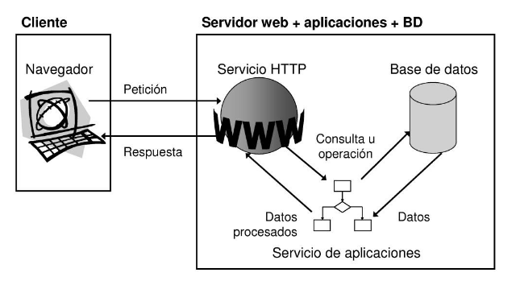

Este capítulo presenta al autor del proyecto, expone el contexto y la
motivación que llevaron a su ejecución, y resume en una frase el
propósito general de la aplicación SIGEBO.
1.1. Presentación personal
Me llamo Diego Lorenzo Mir y tengo 20 años. Soy estudiante
de segundo curso del Ciclo Formativo de Grado Superior en
Desarrollo de Aplicaciones Web (DAW) en el CPIFP Bajo Aragón
de Alcañiz, donde cursé previamente el Grado Medio en Sistemas
Microinformáticos y Redes (SMR). Finalicé aquel ciclo en 2024 con el
reconocimiento al mejor expediente académico de la
promoción, distinción que me confirmó la decisión de orientar mi
trayectoria profesional hacia el desarrollo de software.
A lo largo de mi formación —tanto en SMR como en DAW— el centro aplica
la metodología de Aprendizaje Basado en Retos (ABR), en
la que los estudiantes se organizan en equipos para resolver problemas
reales planteados por clientes externos. He participado en varios de
estos retos y he asumido el rol de líder de equipo en todos ellos por
designación del profesorado, una responsabilidad que ha implicado
coordinar el trabajo del grupo, mediar con el cliente y asegurar que el
producto final cubriera los objetivos planteados. Esa misma dinámica es
la que ha dado lugar al proyecto que se presenta en esta memoria.
Complemento la formación reglada con cursos especializados en
inteligencia artificial aplicada a los negocios
(Universidad Europea) y machine learning con Python (INAEM),
junto con formación más breve en blockchain y emprendimiento.
Profesionalmente he realizado prácticas como técnico de e-commerce en
MotoCrossCenter durante el primer curso de DAW (140 horas) y, en el
momento de redactar esta memoria, las estoy completando en IPG, una
consultora informática centrada en soluciones empresariales y en el
desarrollo asistido por inteligencia artificial.
1.2. Contexto y motivación del proyecto
El Proyecto Fin de Ciclo constituye el último requisito formativo para
obtener la titulación de Técnico Superior en Desarrollo de Aplicaciones
Web. A diferencia del resto de retos cursados durante mi formación
—planteados bajo la metodología de Aprendizaje Basado en Retos
(ABR)—, este TFG se articula sobre Aprendizaje Basado en
Proyectos (ABP), la única vez que se aplica esta metodología
en todo mi recorrido en el centro. La razón es que el TFG no es un reto
exploratorio sin solución prevista, sino un proyecto formal y
evaluable: requiere objetivos definidos, una planificación cerrada,
una memoria escrita y una defensa pública. ABP proporciona el marco
adecuado para esa estructura, manteniendo a la vez el trabajo en
equipo y la relación con un cliente real que caracteriza al centro.
En esta edición, el cliente que trasladó el problema al centro fue el
CPIFP San Blas, que imparte el ciclo formativo de
grado superior en Coordinación de Emergencias y Protección
Civil. Su equipo docente detectó la necesidad de una herramienta
digital que centralizara la operativa diaria de un parque de
bomberos —hasta entonces gestionada con métodos manuales y
herramientas dispersas— y que, además, pudiera utilizarse como recurso
didáctico realista para los alumnos del ciclo, futuros profesionales
encargados precisamente de coordinar este tipo de servicios. A partir
de esta demanda se constituyó el equipo SyncFive, formado por
cinco estudiantes de DAW del que asumí el rol de líder, y que abordó
el proyecto bajo el nombre comercial de SIGEBO. El desarrollo se ha
extendido a lo largo de aproximadamente seis meses, entre
diciembre de 2025 y mayo de 2026.
La motivación para abordar este proyecto en particular reúne tres
vertientes que considero igualmente relevantes. En primer lugar, una
razón formativa: SIGEBO obliga a integrar prácticamente
todas las competencias del ciclo DAW —diseño de bases de datos
relacionales, API REST, autenticación y control de acceso, frontend
responsive, cartografía web y despliegue contenerizado—, lo que
convierte el reto en una síntesis natural de lo aprendido. En segundo
lugar, una razón técnica: el dominio del problema
incluye elementos poco habituales en proyectos académicos, como la
cartografía GIS con Leaflet, la gestión de cinco roles con permisos
granulares o la coordinación de información en tiempo real durante
emergencias. Por último, una razón de impacto: trabajar
sobre un problema real que afecta a un servicio esencial como la
respuesta ante emergencias añade una dimensión de utilidad pública que
proyectos puramente académicos no ofrecen.
1.3. Propósito general de la aplicación
Mi proyecto consiste en una aplicación web para la gestión integral de
parques de bomberos —personal, recursos, emergencias y cartografía— que
centraliza la operativa diaria del servicio en una única plataforma
accesible desde cualquier dispositivo.
Capítulo 2
Planteamiento del problema
Este capítulo describe la necesidad operativa que originó el proyecto,
identifica el público al que va dirigida la aplicación y analiza el
estado actual de la gestión de parques de bomberos junto con las
soluciones existentes en el mercado.
2.1. Necesidad detectada
Un parque de bomberos es una instalación que opera de forma
ininterrumpida y maneja, día tras día, un volumen elevado de
información heterogénea: turnos y guardias del personal, formación
continua y méritos profesionales, inventario de vehículos y materiales,
mantenimiento de equipos, infraestructura de agua —especialmente la
red de hidrantes—, registro de avisos y emergencias, movilización de
unidades, partes e informes posteriores, cartografía operativa, etc.
Toda esta información es crítica: una guardia mal asignada, un
hidrante inoperativo no detectado o un vehículo sin la revisión al día
pueden traducirse en una respuesta deficiente ante una emergencia
real.
Pese a esta criticidad, la realidad observada al estudiar el problema
es que la mayoría de parques continúan gestionando estos procesos
con métodos manuales y herramientas dispersas:
cuadrantes en papel o en hojas de cálculo aisladas, comunicaciones
por teléfono y mensajería, libros de registro físicos para las
intervenciones, y ausencia de un punto único donde un mando o
coordinador pueda consultar en tiempo real el estado del personal,
los recursos y las emergencias activas. Esta fragmentación genera
duplicidad de información, riesgo de error humano, lentitud en la
toma de decisiones y, en última instancia, una pérdida de eficiencia
operativa difícilmente justificable en un servicio esencial.
Esta necesidad fue trasladada al CPIFP Bajo Aragón por el
CPIFP San Blas como cliente del reto, motivada por
una doble vertiente: por un lado, ofrecer una herramienta útil para
parques reales con los que el centro mantiene contacto en el marco
de su titulación; por otro, disponer de un recurso didáctico con el
que su alumnado pudiera familiarizarse con el tipo de sistemas que
manejará en su futura actividad profesional como Técnicos Superiores
en Coordinación de Emergencias y Protección Civil.
2.2. Público destinatario
SIGEBO se ha concebido para tres perfiles de usuario diferenciados,
cada uno con necesidades y nivel de acceso distintos al sistema:
Personal operativo de parques de bomberos —
bomberos y mandos operativos que utilizan la plataforma para
consultar cuadrantes, registrar partes de intervención, gestionar
materiales y vehículos, y acceder a la cartografía operativa
durante las emergencias. Constituyen el usuario primario y más
numeroso. Engloba los siguientes roles del sistema, confirmados
por el equipo docente del CPIFP San Blas como reales en la
estructura organizativa de un parque:
Bombero — bombero operativo de base; labores de extinción, rescate y salvamento.
Oficial — oficial de guardia; coordina al equipo de bomberos durante su turno.
Jefe de Intervención — dirección táctica de las operaciones en el lugar del siniestro.
Personal de coordinación y administración —
responsables de planificar guardias, gestionar la formación y los
méritos del personal, supervisar el mantenimiento de la
infraestructura y elaborar informes de actividad. Requieren acceso
a vistas agregadas y a operaciones administrativas que el personal
operativo no necesita. Engloba los siguientes roles del sistema:
Jefe de Mando — dirección estratégica del servicio y coordinación de múltiples unidades.
Inspector — supervisión, inspección y control de calidad del servicio.
Alumnado del ciclo de Coordinación de Emergencias y
Protección Civil del CPIFP San Blas — futuros
profesionales del sector que utilizan SIGEBO como recurso
didáctico para familiarizarse, en un entorno controlado, con el
tipo de herramientas digitales que encontrarán en su entorno
laboral.
El sistema cubre las necesidades de estos tres perfiles mediante un
modelo de control de acceso basado en cinco roles
diferenciados, cuyos permisos se desarrollan con detalle en
el capítulo de diseño.
2.3. Estado actual y soluciones existentes
Durante la fase inicial del proyecto se realizó un análisis del
mercado con el objetivo de identificar soluciones ya consolidadas
que cubrieran necesidades similares. La búsqueda permitió localizar
dos referencias principales que conviene mencionar:
FUOCO — software de gestión integral de parques
de bomberos. Es utilizado, entre otras administraciones, por la
Diputación Provincial de Teruel, pero no está disponible como
producto abierto ni comercial al que un tercero pueda acceder
libremente.
SECIGEST — plataforma de gestión de servicios
contra incendios y emergencias, empleada por ejemplo en la
provincia de Huesca. Se ofrece bajo un modelo propietario, con
licenciamiento y costes asociados, dirigido a entidades
profesionales que necesitan una solución llave en mano.
Ambas soluciones acreditan que la necesidad detectada es real y que
el problema ya ha sido abordado en el sector. Sin embargo, ninguna
de las dos resultó adecuada para el contexto del cliente:
FUOCO no está accesible como producto abierto
ni distribuido comercialmente, lo que dificulta —cuando no
impide— su adopción por terceros y, especialmente, por un
centro educativo que necesita libertad para adaptar y enseñar
sobre el propio sistema.
SECIGEST resuelve el problema, pero lo hace bajo
un modelo comercial cuyo coste y opacidad técnica son
incompatibles con un uso didáctico abierto, en el que el
alumnado debe poder inspeccionar, modificar o ampliar la
aplicación.
A las limitaciones de acceso se suma un motivo de fondo más
relevante: la percepción compartida por los usuarios
reales de ambas herramientas. Tanto el personal de
bomberos en activo como el alumnado de la titulación de
Coordinación de Emergencias y Protección Civil del CPIFP San Blas
coinciden en describir estas aplicaciones como
poco intuitivas, con fallos recurrentes, visualmente
anticuadas e incompletas frente a las necesidades reales
del día a día en un parque de bomberos. Esta insatisfacción
aparece de forma sistemática al recoger los requisitos del
cliente y es, junto con la cuestión del acceso, uno de los
motores fundamentales del proyecto.
A partir de este análisis, el equipo concluyó que existía un hueco
claro para una solución propia, abierta, moderna y
adaptada al doble uso operativo-didáctico requerido por
el CPIFP San Blas. Esa solución es SIGEBO.
Capítulo 3
Objetivos
Este capítulo formula los objetivos del proyecto a partir del
problema y el público ya identificados. Se presenta primero el
objetivo general que articula la finalidad de SIGEBO, y a
continuación la lista de objetivos específicos, formulados
durante la fase de planificación siguiendo el criterio SMART y
alineados con los requisitos funcionales y no funcionales
recogidos del cliente.
3.1. Objetivo general
Diseñar, desarrollar y desplegar SIGEBO, una
aplicación web para la gestión integral de un parque de
bomberos —personal, recursos, mantenimiento, emergencias
y cartografía operativa— concebida con un doble propósito
operativo y didáctico para el CPIFP San Blas y su
alumnado de Coordinación de Emergencias y Protección Civil.
3.2. Objetivos específicos
Para alcanzar el objetivo general, el proyecto se descompone en
los siguientes objetivos específicos, cada uno asociado a un
bloque funcional del sistema que se desarrolla en detalle en los
capítulos posteriores:
OE1 — Digitalizar la operativa diaria del parque.
Sustituir los procedimientos manuales y dispersos por un único
punto digital de gestión que cubra personal, guardias, formación,
recursos y mantenimiento.
OE2 — Desarrollar una API REST en PHP.
Centralizar la lógica de negocio y la persistencia de datos en
una capa de servicios HTTP que actúe como única fuente de
verdad para todos los clientes del sistema.
OE3 — Diseñar una interfaz web responsive, moderna e
intuitiva. Ofrecer al usuario final una experiencia
clara y rápida, accesible desde cualquier dispositivo, que
supere las carencias de usabilidad detectadas en herramientas
existentes del sector (FUOCO, SECIGEST).
OE4 — Implementar autenticación segura y control de
acceso basado en roles. Establecer un modelo de cinco
roles diferenciados (Bombero, Oficial, Jefe de Intervención,
Jefe de Mando, Inspector) con permisos específicos, junto con
un mecanismo de autenticación robusto que garantice la
segregación de funciones y la trazabilidad de las acciones.
OE5 — Construir un módulo de gestión de emergencias.
Permitir el registro de llamadas, la movilización de recursos
humanos y materiales hacia el lugar del siniestro y la
generación automática de informes post-intervención.
OE6 — Integrar un módulo cartográfico (GIS).
Representar sobre el mapa los hidrantes, los puntos de riesgo,
las rutas de acceso y la información meteorológica relevante
para la toma de decisiones operativas.
OE7 — Implementar un sistema de gestión del talento.
Evaluar de forma objetiva al personal del parque combinando
rendimiento, formación, participación y feedback, como apoyo a
decisiones de promoción, formación y asignación de
responsabilidades.
OE8 — Documentar la solución para uso y mantenimiento.
Acompañar el sistema con una ayuda contextual integrada para el
usuario final y con la documentación técnica necesaria para su
despliegue, mantenimiento y futuras ampliaciones —entre ellas,
el asistente conversacional (chatbot) previsto como línea de
evolución.
Capítulo 4
Planificación
Este capítulo describe la planificación con la que se abordó el
desarrollo de SIGEBO: la metodología elegida, la descomposición
del trabajo en fases y tareas, los recursos asignados, el
cronograma, el plan de gestión de riesgos y las herramientas de
gestión que sostuvieron la coordinación del equipo durante todo
el proyecto.
4.1. Metodología
SIGEBO se ha desarrollado siguiendo un enfoque iterativo y
por fases propio de los proyectos de ingeniería del
software. El trabajo se ha organizado en cuatro grandes fases
sucesivas: planificación, desarrollo, pruebas y
lanzamiento. Cada fase ha generado entregables propios
—documentos de análisis, prototipos, módulos funcionales,
informes de pruebas y, finalmente, el despliegue— que han
servido como entrada validada para la siguiente.
Los objetivos del proyecto se formularon siguiendo el criterio
SMART, lo que ha permitido descomponer la visión
general en metas concretas, medibles y acotadas en el tiempo. Esta
formulación es la base sobre la que descansan tanto la
planificación de tareas como la gestión de riesgos.
El control y seguimiento del proyecto se ha apoyado en dos
mecanismos complementarios: una reunión corta diaria
al inicio de cada jornada para resolver dudas y comunicar
incidencias, y una reunión semanal de seguimiento
los viernes a última hora, en la que se revisan avances, se
reasignan tareas y se evalúan las desviaciones respecto al plan.
Cualquier cambio relevante en el alcance o los plazos requiere la
aprobación del cliente, canalizada a través del líder del
proyecto.
4.2. Esquema de descomposición del trabajo (EDT)
La descomposición del trabajo se ha estructurado en cuatro
grandes fases, cada una dividida en subfases y tareas finales
con asignación horaria estimada. El total asciende a
990 horas, distribuidas entre los cinco
integrantes del equipo. La estructura jerárquica completa del
EDT es la siguiente:
1. Planificación — 170 h
1.1 Análisis de requisitos — 70 h (análisis y alcance, requisitos funcionales y no funcionales, usuarios y casos de uso, selección de tecnologías).
1.2 Diseño del sistema — 100 h (arquitectura, wireframes, UX, UI, modelo de datos, validación con stakeholders).
2. Desarrollo — 635 h
2.1 Configuración del entorno — 20 h.
2.2 Frontend — 205 h (estructura base, vistas y formularios, interacciones, validaciones cliente).
2.3 Backend — 215 h (API y lógica de negocio, base de datos, consumo de datos).
2.4 Integración Backend/Frontend — 105 h (conexión a endpoints, CORS, sincronización de formularios y manejo de errores).
2.5 Seguridad — 100 h (validación y sanitización, prevención de inyecciones y XSS, credenciales y sesiones, HTTPS).
3. Pruebas — 85 h
3.1 Pruebas varias — 75 h (funcionales frontend, unitarias backend, aceptación de usuario, seguridad).
3.2 Pruebas de integración — 10 h.
4. Lanzamiento — 100 h
4.1 Despliegue en entorno de producción — 75 h.
4.2 Optimización de rendimiento — 15 h.
4.3 Monitorización y soporte post-lanzamiento — 10 h.
La representación gráfica del EDT, generada por el equipo
SyncFive durante la fase de planificación, se muestra a
continuación:
Figura 4.1. Esquema de descomposición del trabajo (EDT) del proyecto SIGEBO. Fuente: equipo SyncFive.
4.3. Recursos
Los recursos asignados al proyecto se agrupan en dos categorías:
humanos y materiales.
Recursos humanos. El equipo de desarrollo —bajo
el nombre SyncFive— está formado por cinco
estudiantes de segundo curso del Ciclo Formativo de Grado
Superior en Desarrollo de Aplicaciones Web del CPIFP Bajo
Aragón, con una dedicación de 18 horas semanales por
persona. El reparto de roles es el siguiente:
Líder de proyecto — coordina las tareas, controla plazos, gestiona la comunicación con el cliente y asegura el cumplimiento de los objetivos. Rol asumido por el autor de esta memoria.
Desarrollador/a Full Stack — desarrollo del frontend y del backend, integración de la base de datos y de las funcionalidades principales. Rol compartido por todo el equipo.
Diseñador/a Front-End y UX/UI — diseño de la interfaz, estructuración de vistas, responsividad y experiencia de uso. Rol compartido por todo el equipo.
Encargado/a de Pruebas y Documentación — pruebas funcionales y de usabilidad, redacción de la documentación técnica y de usuario. Rol compartido por todo el equipo.
Junto al equipo de desarrollo participan dos figuras externas:
el cliente (alumnado y profesorado del CPIFP San
Blas), que define los requisitos, valida avances y aprueba las
entregas; y el profesorado del CPIFP Bajo Aragón,
que actúa como sponsor académico del proyecto, supervisa el
cumplimiento y, finalmente, lo evalúa.
Recursos materiales. El proyecto se ha
desarrollado sin presupuesto económico asignado,
empleando exclusivamente herramientas y servicios gratuitos. Se
ha utilizado el equipamiento personal de cada miembro del equipo
—ordenador portátil y conexión a internet— y el aula del centro
durante las horas lectivas asignadas al módulo de proyecto.
Conviene señalar, además, que la dedicación real ha superado de
forma notable las 18 horas semanales contempladas en la
planificación. Tanto durante el periodo lectivo como, sobre todo,
a lo largo de la fase de prácticas en empresa,
los miembros del equipo han invertido un volumen significativo
de horas fuera del aula para pulir detalles, corregir
desviaciones detectadas en las pruebas y elevar el nivel de
acabado de la aplicación hasta una calidad propiamente
profesional. Esta dedicación adicional, no presupuestada en el
cronograma inicial, ha sido decisiva para entregar SIGEBO en su
estado final.
4.4. Cronograma
La planificación temporal se construyó a partir del EDT y de los
recursos disponibles —cinco personas, 18 horas semanales y 11
semanas hábiles entre diciembre de 2025 y marzo de 2026—,
arrojando un total teórico de 990 horas de trabajo.
El cronograma se ha materializado como un diagrama de
Gantt generado en GitHub Projects, en el que cada tarea
del EDT aparece con su fase, su asignación de personas, sus
fechas de inicio y fin y su estado actual (figura 4.2).
Los hitos principales de la planificación inicial son los
siguientes:
05/12/2025 — arranque del proyecto: inicio de la fase de planificación.
14/02/2026 — fin de la fase de desarrollo e inicio de las pruebas y de la redacción de la documentación técnica.
20/02/2026 — fin de la fase de pruebas y validación con el cliente.
28/02/2026 — entrega de la documentación técnica.
13/03/2026 — cierre del desarrollo funcional, antes del periodo de prácticas en empresa.
02/06/2026, 11:30 — defensa del proyecto ante el tribunal.
Para asegurar la calidad, cada tarea del Gantt se revisa en
grupo antes de darla por cerrada y vincularse a la siguiente.
Esta validación encadenada evita el conocido efecto bola de
nieve, en el que un error sin detectar en una fase temprana
obliga a rehacer trabajo posterior.
Figura 4.2. Diagrama de Gantt del proyecto SIGEBO generado en GitHub Projects. Fuente: equipo SyncFive.
4.5. Plan de gestión de riesgos
Como parte de la planificación se elaboró un registro de
riesgos que identifica las amenazas más relevantes para
la ejecución del proyecto, las valora en términos de
probabilidad e impacto (escala 1–10), las prioriza y asocia a
cada una una respuesta y un propietario. Los diez riesgos
identificados —ordenados aquí por categoría— son los siguientes:
R1 — Falta de conocimientos técnicos del equipo (RRHH; 8×8). Respuesta: formación puntual, documentación técnica compartida y asignación de tareas según nivel. Disparador: tareas que requieren más del doble del tiempo estimado.
R2 — Dificultades técnicas en el desarrollo (Técnico; 8×8). Respuesta: revisiones de código, pruebas continuas y documentación clara. Disparador: bloqueo durante más de una sesión de trabajo o fallos repetidos en integración.
R3 — Pérdida de información o fallos en el control de versiones (Técnico; 7×9). Respuesta: uso de ramas controladas, commits frecuentes y copias de seguridad. Disparador: conflictos difíciles de resolver o cambios no registrados.
R4 — Retrasos en la planificación y entrega de tareas (Gestión; 8×7). Respuesta: reorganizar prioridades, revisiones semanales y ajustar cargas de trabajo. Disparador: tarea con más de dos días de retraso.
R5 — Falta de comunicación interna o con el cliente (Comunicación; 7×8). Respuesta: reuniones fijas semanales y canal de comunicación centralizado. Disparador: mensajes sin respuesta en 24–48 h o malentendidos frecuentes.
R6 — Riesgos derivados del trabajo en grupo (RRHH; 7×8). Respuesta: reparto equitativo de tareas, reuniones de seguimiento y roles claros.
R7 — Problemas de calidad en la entrega final (Calidad; 6×9). Respuesta: pruebas de usabilidad, validación con el cliente y revisión de documentación.
R8 — Riesgos de seguridad (Seguridad; 5×10). Respuesta: auditorías internas, validaciones de entrada y configuración segura del entorno.
R9 — Cambios de requisitos por parte del cliente (Requisitos; 5×8). Respuesta: validación por fases, control de cambios y documentación formal.
R10 — Fallos en el despliegue en la nube (Técnico; 4×7). Respuesta: pruebas en entorno local, guía de despliegue y copias de seguridad.
Las desviaciones reales que se materializaron durante la
ejecución del proyecto, así como las respuestas aplicadas, se
analizan con detalle en el capítulo de Conclusiones.
4.6. Herramientas de gestión del proyecto
Para sostener la coordinación del equipo y el flujo de
información se ha empleado un conjunto reducido y deliberadamente
gratuito de herramientas, organizadas según su propósito.
Comunicación con el cliente y entre centros.
Para canalizar la relación entre el equipo de desarrollo
(SyncFive, CPIFP Bajo Aragón) y el cliente (alumnado y
profesorado del CPIFP San Blas) se creó una comunidad de
WhatsApp bautizada como «PROYECTO RED — Sistema de
Gestión de Emergencias», organizada internamente en seis
grupos diferenciados para que cada interlocutor recibiera
únicamente las conversaciones que le competían:
GRUPO RED — grupo general transversal en el que participan todos los actores del proyecto: el equipo SyncFive, el profesorado del CPIFP Bajo Aragón, y el profesorado y el alumnado del CPIFP San Blas con el que se coopera para recabar información del dominio y resolver dudas.
CPIFP Bajo Aragón — grupo interno del equipo de desarrollo y su profesorado.
CPIFP San Blas — grupo interno del cliente: su alumnado y su profesorado.
RRHH — sub-equipo especializado en el módulo de Recursos Humanos.
RRMM — sub-equipo especializado en el módulo de Recursos Materiales.
CECOM — sub-equipo especializado en el módulo de Gestión de Emergencias (Centro de Comunicaciones).
Los tres últimos grupos (RRHH, RRMM y CECOM) se crearon
aproximadamente a mitad del desarrollo, cuando
el proyecto ya estaba bien encaminado. La decisión respondió a
una observación de gestión: la aplicación se vertebraba en torno
a tres pilares funcionales —recursos humanos,
recursos materiales y gestión de las emergencias— y el cliente,
por su parte, también había organizado a su alumnado en
sub-equipos especializados en cada uno de esos tres ámbitos.
Como líder de SyncFive opté por asignar a cada miembro
del equipo de desarrollo a uno de los tres pilares y
emparejarlo con los alumnos del CPIFP San Blas especializados en
ese mismo ámbito. Cada uno de los tres grupos materializa esa
pareja desarrollador–sub-equipo cliente. La medida agilizó la
resolución de dudas específicas, redujo el ruido en el grupo
general y permitió a cada desarrollador profundizar en un área
concreta del dominio.
Con anterioridad a la creación de la comunidad de WhatsApp —y de
forma puntual también después, para gestiones formales— se
empleó el correo electrónico como medio de
comunicación con el profesorado del CPIFP San Blas.
Comunicación académica interna del equipo. Para
las gestiones académicas con el profesorado del CPIFP Bajo
Aragón se emplea la mensajería instantánea de
Aeducar, plataforma oficial del centro.
Gestión documental, de código y de tareas. Las
herramientas que soportan los artefactos del proyecto son las
siguientes:
Gestión documental — carpeta compartida en Google Drive para todos los documentos del proyecto (planificación, análisis, diseño, pruebas).
Gestión del código fuente — repositorio en GitHub, con ramas por funcionalidad y revisión mediante pull requests.
Gestión de tareas y cronograma — GitHub Projects, con su vista de tablero (kanban) para el seguimiento del sprint y su vista de Roadmap para el diagrama de Gantt.
Entrega de tareas al profesorado — plataforma Aeducar del CPIFP Bajo Aragón.
Toda comunicación que afecte al alcance, los plazos o los
requisitos se canaliza obligatoriamente a través del
líder del proyecto, garantizando un único punto
de contacto frente al cliente y evitando mensajes contradictorios
hacia el equipo.
Capítulo 5
Diseño del sistema
Este capítulo describe el diseño técnico de SIGEBO: la
arquitectura software y de despliegue elegidas, el modelo de
datos que sostiene la persistencia, los casos de uso que el
sistema soporta y la forma en la que se comunican entre sí los
distintos componentes.
5.1. Arquitectura del sistema
SIGEBO se ha construido sobre una arquitectura
cliente–servidor con separación estricta entre
frontend y backend. El cliente es una aplicación web
independiente (HTML, CSS y JavaScript) que reside como
ficheros estáticos en el servidor web; el backend es una
API REST monolítica en PHP que devuelve
exclusivamente JSON. Frontend y backend no comparten código, ni
proceso, ni plantillas renderizadas en servidor: se comunican
únicamente mediante peticiones HTTP.
Esta separación física obliga a precisar el patrón
arquitectónico empleado. El patrón Modelo–Vista–Controlador
clásico presupone que la Vista son plantillas
renderizadas por el propio servidor, lo que no ocurre en SIGEBO:
la capa de presentación reside íntegramente en el cliente. Por
ello el backend implementa una arquitectura en capas de
tipo Controlador–Servicio–Modelo (CSM), que reserva la
capa de presentación al frontend independiente y añade una capa
explícita de servicio entre controlador y modelo para
centralizar la lógica de negocio.
El conjunto de tecnologías base del proyecto (PHP, MySQL,
HTML/CSS/JavaScript y las librerías de soporte habituales)
vino dado por el profesorado como marco de
trabajo del TFG, sin posibilidad de incorporar
frameworks de servidor (Laravel, Symfony, CodeIgniter)
ni de cliente (React, Vue, Angular). Como complemento a ese
marco, el profesor de Desarrollo Web en Entorno Servidor
entregó al equipo una infraestructura base (Core)
en PHP nativo estricto —router, validador, autoloader, gestión
de sesiones, manejador de JWT y envoltorios HTTP
(Request/Response)—, sobre la que
cada equipo debía construir su aplicación. Esta separación de
capas permite que el alumnado se centre en la lógica de negocio
y el modelo del dominio sin reinventar piezas técnicas
transversales que se imparten de forma teórica en la
asignatura.
Sobre ese esqueleto, el equipo SyncFive ha desarrollado el
grueso del trabajo de SIGEBO: los veinticinco dominios del
sistema (Controlador + Servicio + Modelo por cada agregado), el
registro completo de rutas REST con declaración de roles
autorizados, las reglas de validación declarativas de cada
endpoint, los middlewares específicos del proyecto
(RateLimitMiddleware, AuthMiddleware,
RoleMiddleware), el servicio de correo transaccional
(EmailService) sobre PHPMailer, el modelo de
datos completo y la dockerización del entorno. Se utiliza
Composer como gestor de dependencias siguiendo el estándar
PSR-4.
El sistema se organiza, por tanto, en torno a un
frontend independiente y un backend en
tres capas principales (Controlador, Servicio y
Modelo), apoyado por dos capas transversales (Middlewares e
Infraestructura/Core) y por una capa de Validación reutilizable.
Sus responsabilidades son:
Frontend (cliente) — aplicación web independiente que se ejecuta en el navegador del usuario. No contiene lógica de negocio: muestra información, recoge acciones y emite peticiones HTTP a la API REST. Tecnologías: HTML5, CSS3, JavaScript, Bootstrap y Leaflet sobre OpenStreetMap para la cartografía operativa.
Controlador (Controller) — punto de entrada de cada petición en el backend. Su implementación es deliberadamente delgada: extrae los parámetros del Request, invoca al servicio correspondiente y construye la Response en JSON (incluyendo el código HTTP y los mensajes de error). Hay 25 controladores, uno por cada agregado del dominio (Persona, Vehículo, Emergencia, etc.).
Servicio (Service) — núcleo de la lógica de negocio y punto donde se valida el contenido de cada petición. Cada servicio invoca al validador con un conjunto de reglas declarativas, orquesta operaciones que afectan a varias entidades (transacciones, envío de email, transformaciones de datos) y aplica las reglas del dominio. Hay 25 servicios, simétricos a los controladores.
Modelo (Model) — capa de persistencia. Implementa el patrón DAO/repositorio sobre una base de datos relacional MySQL mediante PDO con consultas parametrizadas para prevenir inyección SQL. No conoce ni la interfaz de usuario ni la lógica de negocio: se limita a leer y escribir datos garantizando su integridad.
Las dos capas transversales que sostienen el flujo son:
Middlewares — interceptores que se ejecutan antes del controlador. El proyecto incluye tres: RateLimitMiddleware, que limita la frecuencia de peticiones por origen para mitigar abusos; AuthMiddleware, que comprueba la identidad del usuario (sesión PHP o, si la ruta así lo declara, JWT en cabecera Authorization: Bearer); y RoleMiddleware, que comprueba que el rol del usuario figura entre los autorizados para la ruta solicitada. La autorización se declara por ruta como un array de roles permitidos (p. ej. [3, 4, 5] para «solo Jefes e Inspector»).
Infraestructura (Core) — componentes técnicos reutilizables, entregados como esqueleto base del proyecto por el profesor de Desarrollo Web en Entorno Servidor, sobre los que se apoyan todas las capas: Router basado en expresiones regulares; Request y Response como envoltorios HTTP; Database y DB, que gestionan la conexión PDO a MySQL; Session, gestor de sesiones server-side con regeneración de identificador en cada login; y JWT, implementación HS256 sin librería externa. Sobre esa base, el equipo añadió el EmailService, un envoltorio sobre PHPMailer para los correos transaccionales (activación de cuenta y recuperación de contraseña) requeridos por el dominio del proyecto.
Finalmente, la capa de Validación, también
parte de la infraestructura base entregada por el profesorado,
ofrece una clase Validator con un pequeño
DSL al estilo de Laravel: las reglas se declaran como
cadena separada por barras
(required|string|max:50,
required|email,
required|string|password), y los errores se
acumulan y se elevan como ValidationException, que
el controlador convierte automáticamente en una respuesta HTTP
422 con la lista detallada de errores por campo. El equipo se
ha encargado de declarar las cadenas de reglas concretas que
protegen cada endpoint del proyecto.
Para el despliegue se ha optado por una arquitectura de
servidor único en la que los tres servicios lógicos
—servidor web, servidor de aplicaciones y servidor de base de
datos— se ejecutan en el mismo host físico, pero
aislados en contenedores Docker independientes.
Cada contenedor encapsula su servicio junto con sus
dependencias, garantizando un entorno de ejecución reproducible
en cualquier máquina. Esta separación lógica permite parar,
actualizar o sustituir cualquiera de los tres servicios sin
afectar a los demás, y mantiene abierta la puerta a una
migración futura a una arquitectura distribuida sin reescribir
el código.
Servidor web — sirve los archivos estáticos del frontend (HTML, CSS, JavaScript) y gestiona las peticiones HTTP/HTTPS de los clientes. Tecnología: Apache o Nginx sobre Docker.
Servidor de aplicaciones — aloja la API REST en PHP, donde residen el controlador, el servicio y el modelo. Procesa las peticiones recibidas desde el servidor web y aplica las reglas de negocio y de seguridad.
Servidor de base de datos — instancia MySQL dedicada exclusivamente a la persistencia de datos. Garantiza integridad referencial, consistencia y respaldo.
Figura 5.1. Esquema general de la aplicación SIGEBO y sus componentes principales. Fuente: equipo SyncFive.
Para visualizar de forma integral cómo interactúan estos tres
servicios lógicos durante una petición real, el siguiente
diagrama representa el flujo completo entre el cliente y los
componentes alojados en el servidor único.

Figura 5.2. Flujo cliente–servidor en la arquitectura de SIGEBO: el navegador emite una petición HTTP que el servicio web atiende y delega en el servicio de aplicaciones, el cual consulta la base de datos y devuelve los datos procesados al cliente. Fuente: equipo SyncFive.
Como se observa en el diagrama, aunque los tres servicios
conviven físicamente en la misma máquina mantienen
responsabilidades estrictamente separadas: el servicio HTTP
actúa como punto de entrada sin procesar lógica de negocio ni
acceder a los datos, el servicio de aplicaciones concentra todo
el procesamiento, y el servidor de base de datos atiende
exclusivamente consultas SQL. Esta separación lógica permitirá,
llegado el caso, migrar cada servicio a una máquina
independiente sin reescribir la aplicación.
5.2. Modelo de base de datos
Una vez establecido cómo se distribuyen los servicios sobre el
servidor único, esta sección detalla qué contiene el último de
ellos: el servidor de base de datos. La persistencia se ha
modelado en una base de datos relacional MySQL.
El diagrama entidad-relación reúne
aproximadamente una veintena de entidades, alineadas con los
tres pilares funcionales que vertebran la aplicación —recursos
humanos, recursos materiales y gestión de las emergencias—. La
entidad Persona ocupa una posición central:
participa en numerosas relaciones (guardias, formaciones,
méritos, permisos, intervenciones) y concentra además los
campos vinculados a la autenticación (nombre de usuario,
contraseña, tokens de activación y de cambio de contraseña).
Las entidades se agrupan en las tres áreas funcionales
siguientes:
Recursos Humanos (RRHH) — gestiona al personal del parque y todas las relaciones que lo afectan:
Persona, Rol, Grupo — identidad, perfil profesional y agrupación organizativa.
Carnet, Mérito, Formación, Edición — titulaciones, reconocimientos y formación continua.
Guardia, Turno de refuerzo, Permiso, Motivo — planificación de servicio y gestión de ausencias.
Recursos Materiales (RRMM) — gestiona el inventario y la infraestructura del parque:
Vehículo, Material, Categoría — flota y equipamiento del servicio.
Instalación, Almacén — espacios físicos del parque y ubicación del material.
Mantenimiento, Incidencia — seguimiento del estado operativo del material y de los vehículos.
Gestión de Emergencias (CECOM) — núcleo operativo del sistema durante una intervención:
Emergencia, Tipo de emergencia — registro y clasificación de los avisos atendidos.
Salida — registro de la movilización de cada vehículo.
Aviso — comunicaciones internas relacionadas con la intervención.
El diagrama entidad-relación completo se muestra a continuación:
Figura 5.3. Diagrama entidad-relación de la base de datos de SIGEBO. Fuente: equipo SyncFive.
5.3. Casos de uso
El sistema soporta diecisiete casos de uso
principales, agrupados en tres ámbitos funcionales
—personal y formación, operativa diaria del parque y gestión de
emergencias— y accesibles según el rol del usuario autenticado.
Los cinco roles ya presentados en el capítulo 2 (Bombero,
Oficial, Jefe de Intervención, Jefe de Mando e Inspector)
actúan como actores en cada caso. El control de
acceso no es estrictamente jerárquico: cada ruta de la API
declara explícitamente los identificadores de rol autorizados,
lo que permite, por ejemplo, que la creación de una emergencia
esté abierta al Jefe de Intervención pero la modificación
posterior quede reservada al Jefe de Mando. Como norma general,
las operaciones de consulta están abiertas a los cinco roles
para favorecer el conocimiento operativo compartido, mientras
que las operaciones de escritura se restringen al perfil
responsable.
Ámbito A. Personal y formación. Reúne los
casos de uso vinculados a la identidad de los miembros del
cuerpo, su trayectoria profesional y su disponibilidad:
CU1 — Autenticarse y gestionar la cuenta personal. Inicio de sesión con usuario y contraseña, activación de cuenta mediante token enviado por correo, recuperación y cambio de contraseña, y actualización del perfil propio (datos de contacto y fotografía). Actor principal: cualquier rol autenticado.
CU2 — Administrar el personal del parque. Alta, modificación y baja lógica de los bomberos del cuerpo, así como la asignación inicial del material individual entregado a cada uno. Actor principal: Jefe de Mando (alta y modificación); Inspector (baja).
CU3 — Gestionar carnets, méritos y formaciones. Mantenimiento del catálogo de carnets profesionales (con cálculo automático de la fecha de caducidad a partir de la fecha de obtención y la duración del carnet), del catálogo de méritos y del plan de formación interno con sus ediciones; asignación de cada elemento a las personas correspondientes y gestión de inscripciones a las ediciones. Actor principal: Jefe de Mando (alta y asignación); Inspector (asignación de méritos y borrado del catálogo).
CU4 — Solicitar y gestionar permisos. Solicitud de permisos por parte de cualquier miembro del cuerpo, indicando motivo de una lista controlada (vacaciones, baja médica, asuntos personales, etc.); revisión, aprobación o modificación por parte de la jefatura. Actor principal: cualquier rol para solicitar; Jefe de Mando para aprobar y modificar.
CU5 — Consultar el área personal. Vista consolidada de los datos del usuario autenticado: guardias y turnos de refuerzo asignados, formaciones cursadas o pendientes, carnets y méritos acumulados, material entregado, estadísticas personales y avisos recibidos. Actor principal: cualquier rol autenticado (sobre sus propios datos).
Ámbito B. Operativa diaria del parque. Cubre
la planificación, los recursos materiales y la comunicación
interna que sostienen el funcionamiento del parque al margen de
las intervenciones:
CU6 — Planificar guardias y turnos de refuerzo. Creación de los servicios de guardia ordinaria y de los turnos de refuerzo extraordinarios (cuando la operativa lo requiere), asignación de personas a cada servicio con su cargo correspondiente y registro de notas asociadas al servicio. Actor principal: Jefe de Mando.
CU7 — Alinear la guardia del día. Montaje operativo de la guardia que entra de servicio en una fecha concreta: visualización de las personas asignadas a esa guardia y al refuerzo del día, modificación del cargo asignado a cada una y registro de notas operativas. Actor principal: Jefe de Mando.
CU8 — Consultar el cuadrante. Visualización del calendario consolidado de guardias y refuerzos en vista mensual o anual. El modo individual (las propias guardias y refuerzos) está disponible para cualquier rol autenticado; el modo global del parque queda reservado a Oficial y superiores. Actor principal: cualquier rol autenticado (individual); Oficial y superiores (global).
CU9 — Gestionar la flota de vehículos. Mantenimiento del inventario de vehículos del parque: alta, baja y modificación de matrículas y características; asignación del vehículo a una instalación; carga y descarga del material asociado a cada vehículo. Actor principal: Jefe de Mando.
CU10 — Gestionar el inventario material. Mantenimiento del catálogo de materiales y sus categorías; gestión de las instalaciones del parque y de los almacenes que cada una contiene; ubicación de cada material en su almacén con control de existencias. Actor principal: Jefe de Mando.
CU11 — Registrar mantenimientos e incidencias. Apertura, seguimiento y cierre de los partes de mantenimiento sobre vehículos y materiales, así como el registro de las incidencias que se detectan en el parque. Actor principal: Jefe de Mando.
CU12 — Gestionar la red de infraestructuras de agua. Mantenimiento del catálogo georreferenciado de hidrantes, depósitos y otras tomas de agua, con su visualización sobre mapa cartográfico (Leaflet sobre OpenStreetMap) y filtros por tipo, estado y caudal. Actor principal: Jefe de Intervención (alta); Jefe de Mando (modificación).
CU13 — Enviar y recibir avisos internos. Comunicación interna entre miembros del cuerpo mediante avisos dirigidos a uno o varios destinatarios; consulta de la bandeja de avisos recibidos por el usuario autenticado. Actor principal: Oficial y superiores (envío); cualquier rol autenticado (lectura de los propios).
Ámbito C. Gestión de emergencias. Cubre el
flujo crítico de respuesta a una llamada, desde la apertura del
parte hasta el registro de la salida de los vehículos
movilizados:
CU14 — Registrar y clasificar emergencias. Apertura de un parte de emergencia con los datos del aviso (localización, descripción, datos del solicitante) y clasificación según el catálogo de tipos de emergencia (incendio urbano, accidente de tráfico, rescate, etc.), organizado por grupos. Actor principal: Jefe de Intervención.
CU15 — Despachar recursos a una intervención. Selección de los vehículos que acuden a la emergencia y asignación del personal embarcado en cada uno. Actor principal: Jefe de Intervención.
CU16 — Seguir las emergencias activas. Vista operativa de las emergencias en curso con representación cartográfica de su ubicación sobre mapa Leaflet, lo que permite a la jefatura supervisar el estado del conjunto de las intervenciones simultáneas. Actor principal: cualquier rol autenticado.
CU17 — Registrar salidas de vehículos. Anotación de cada movilización de vehículos como registro independiente (con sus horas de salida y de regreso), lo que permite reconstruir a posteriori el histórico de movimientos de la flota y vincularlo a la emergencia correspondiente. Actor principal: Jefe de Mando.
5.4. Comunicación entre componentes
Ampliando el flujo cliente–servidor representado en la
Figura 5.2, esta sección detalla la cadena
interna que recorre cada petición HTTP dentro del servidor de
aplicaciones. Toda la API entra por un único front
controller (public/index.php) que
configura las cabeceras de CORS y de seguridad, registra el
autoloader PSR-4 y delega la resolución de la ruta al
Router:
1. Routing. El Router compila cada ruta en una expresión regular y enlaza el método HTTP y la URI con un par Controlador@método. Si la ruta no existe, se devuelve 404.
2. Rate limit. Antes de cualquier otra cosa, el RateLimitMiddleware comprueba que el origen no ha excedido el límite de peticiones por ventana de tiempo.
3. Autenticación. Si la ruta está marcada como protegida, el sistema intenta recuperar al usuario de la sesión PHP (mecanismo principal en uso, con cookie de sesión server-side y regeneración del identificador en cada login). De forma complementaria, el AuthMiddleware permite también validar un JWT (HS256) presente en la cabecera Authorization: Bearer para clientes que no mantengan sesión —característica preparada para futuros consumidores externos de la API, aunque el frontend web actual utiliza únicamente la sesión PHP—. Si la autenticación falla, la cadena se interrumpe con un 401.
4. Autorización. Cada ruta protegida declara un conjunto de id_rol autorizados (por ejemplo, [3, 4, 5] para «solo Jefes e Inspector»). El RoleMiddleware comprueba que el rol del usuario figura en esa lista, o devuelve 403.
5. Controlador. Se instancia el controlador correspondiente, que extrae los parámetros del Request y delega al servicio.
6. Servicio + validación. El servicio invoca al Validator con las reglas declarativas del endpoint; si la entrada es inválida, la ValidationException se transforma automáticamente en un 422 con el detalle de los errores por campo. Si es válida, el servicio orquesta la lógica de negocio.
7. Modelo + base de datos. El servicio invoca a uno o varios modelos, que ejecutan las consultas PDO parametrizadas contra MySQL. Operaciones que afectan a varias tablas se envuelven en transacciones para preservar la consistencia.
8. Respuesta. El controlador construye la Response en JSON, con código HTTP coherente con el resultado (200 consulta correcta, 201 recurso creado, 204 sin contenido, 4xx errores de cliente, 5xx errores internos), y la devuelve al navegador, que actualiza la Vista.
La autenticación de usuarios se apoya en el
endpoint POST /auth/login, que compara la
contraseña recibida contra el hash bcrypt almacenado en
la tabla Persona mediante password_verify(),
comprueba que la cuenta está activada y crea la sesión PHP. El
sistema incluye además flujos completos para la
activación de cuenta
(PATCH /auth/activar-cuenta) y la
recuperación de contraseña
(PATCH /auth/recuperar-contrasena y
PATCH /auth/cambiar-contrasena), basados en tokens
temporales con fecha de expiración almacenada en la propia
tabla Persona y enviados al usuario por correo
electrónico mediante PHPMailer.
A modo de ejemplo concreto, el caso de uso «Despachar
recursos a una emergencia» (CU15) recorre los componentes
del sistema de la siguiente forma:
La Vista emite POST /emergencias/{id_emergencia}/vehiculos con la matrícula en el cuerpo JSON y la cookie de sesión del Jefe de Intervención.
El RateLimitMiddleware valida el origen; la sesión PHP recupera al usuario; el RoleMiddleware comprueba que su rol está entre [3, 4, 5] (Jefe de Intervención, Jefe de Mando o Inspector).
El EmergenciaController recibe la petición y delega en EmergenciaService.
El servicio valida la entrada (Validator), comprueba que el vehículo está operativo (consultando VehiculoModel), registra la Salida, actualiza el estado de la Emergencia y notifica al personal asignado mediante AvisoService. Toda la operación se envuelve en una transacción PDO.
El controlador devuelve 201 Created con el estado actualizado de la emergencia, en JSON.
La Vista refresca el panel de seguimiento en tiempo real con el vehículo ya movilizado.
Esta separación estricta de responsabilidades entre Vista,
Controlador, Servicio y Modelo —reforzada por el pipeline de
middlewares y el aislamiento físico en contenedores Docker—
permite que el equipo trabaje en paralelo sobre las distintas
capas sin pisar el código de los demás, hace explícitos los
límites entre la lógica de negocio y la infraestructura, y
sienta las bases para que el sistema pueda crecer en
complejidad sin perder coherencia interna.
Capítulo 6
Tecnologías utilizadas
Este capítulo recoge el conjunto de tecnologías sobre las que
se ha construido SIGEBO, organizadas por la capa del sistema en
la que intervienen. Para cada tecnología se indica su versión,
el papel que desempeña dentro del proyecto y la razón por la
que fue elegida frente a alternativas equivalentes. La premisa
común a todas las elecciones ha sido priorizar herramientas
maduras, ampliamente documentadas y de licencia libre o
gratuita, tanto para alinearse con el carácter
formativo del proyecto como para no introducir dependencias que
comprometieran su sostenibilidad a medio plazo.
6.1. Backend
El núcleo de la API REST está escrito en PHP
8.2 con el modo estricto activado
(declare(strict_types=1) en todos los archivos) y
servido por Apache 2 con el módulo
mod_rewrite habilitado, según queda fijado en el
Dockerfile oficial del proyecto
(FROM php:8.2-apache). El profesorado fijó
como restricción no incorporar ningún framework PHP (Laravel,
Symfony, CodeIgniter) y, en su lugar, proporcionó al equipo el
esqueleto base del backend ya descrito en el
capítulo 5 (Router, Validator, autoloader PSR-4, gestor de
sesiones, gestor JWT HS256 y envoltorios
Request/Response). Sobre ese
esqueleto, el equipo ha implementado los veinticinco dominios
del sistema con su capa de Controlador, Servicio y Modelo, ha
declarado el registro de rutas REST con su control de acceso
por roles, ha definido las reglas de validación de cada
endpoint y ha añadido los middlewares específicos del proyecto
(RateLimitMiddleware, AuthMiddleware,
RoleMiddleware) y el servicio de correo transaccional.
La gestión de dependencias se hace con Composer
siguiendo el estándar de autoload PSR-4, lo que
permite que cualquier nueva clase añadida bajo el namespace
raíz quede automáticamente disponible sin tocar el cargador.
La única dependencia externa declarada por el equipo es
PHPMailer ^7.0, utilizada por el servicio de
correo transaccional para los flujos de activación de cuenta y
recuperación de contraseña. La seguridad de las contraseñas se
apoya en las funciones nativas de PHP
password_hash() y password_verify()
con el algoritmo bcrypt; la autenticación
complementaria mediante JWT (HS256) se apoya
en el gestor sin librería externa incluido en el esqueleto
entregado por el profesorado, lo que evita arrastrar la cadena
transitiva de dependencias que suelen acarrear las
implementaciones comerciales de JWT en PHP.
6.2. Base de datos
La persistencia se apoya en MySQL como sistema
gestor relacional. La elección obedece a tres motivos
objetivos: madurez del producto, conocimiento previo del equipo
(es la base de datos que se imparte en el ciclo formativo
DAW) y disponibilidad inmediata en la pila XAMPP utilizada en
los entornos locales de desarrollo. El acceso desde PHP se hace
a través de PDO con consultas
parametrizadas, lo que neutraliza por diseño
el vector de inyección SQL y permite, si en el futuro se
sustituyera el motor, reemplazar únicamente la capa de
conexión sin reescribir las consultas.
6.3. Frontend
El cliente es una aplicación web independiente construida en
HTML5, CSS3 y JavaScript moderno (módulos
ES, fetch nativo, async/await), sin
ningún framework de componentes. La ausencia de React, Vue o
Angular forma parte de la misma restricción tecnológica fijada
por el profesorado para el backend, y se traduce, en la
práctica, en un cliente delgado —consume JSON, renderiza DOM y
emite eventos— que no acopla el backend a ninguna tecnología
de presentación concreta.
Sobre esta base se incorporan tres librerías de soporte:
Bootstrap 5.3.2 con Bootstrap Icons, cargado desde el CDN público de jsDelivr. Aporta el sistema de rejilla responsive, los componentes de interfaz (modales, formularios, navegación) y la iconografía consistente en toda la aplicación.
Leaflet 1.9.4 sobre OpenStreetMap, cargado desde unpkg, como motor cartográfico libre. Se utiliza en la gestión de infraestructuras de agua (CU12) y en el seguimiento de emergencias activas (CU16) para representar hidrantes, depósitos y la ubicación de los partes abiertos. Se descartó Google Maps por su modelo de facturación y su dependencia de credenciales comerciales.
FullCalendar, cargado bajo demanda únicamente en las páginas que lo necesitan (calendario y cuadrante), para renderizar los servicios de guardia y los turnos de refuerzo en vistas mensual y anual.
6.4. Infraestructura y despliegue
El proyecto se entrega contenedorizado con Docker
y orquestado mediante Docker Compose. Un único
comando (docker compose up) levanta los dos
contenedores que sostienen el sistema: el servicio aplicativo,
construido sobre la imagen oficial php:8.2-apache y
con las extensiones pdo_mysql y mysqli
añadidas en el Dockerfile, y el servicio de base de
datos, basado en la imagen oficial mysql:8.0 con un
volumen persistente para los datos y la carga automática del
script DDL_DML_SIGEBO.sql en el primer arranque.
Ambos contenedores comparten una red interna privada y la
conexión entre ellos se resuelve por el nombre del servicio.
Para el desarrollo, ambos servicios exponen sus puertos al
host (8081:80 para Apache y 3307:3306
para MySQL), lo que permite acceder a la aplicación desde el
navegador y conectar herramientas de gestión de base de datos
directamente desde la máquina local.
La configuración sensible (credenciales de base de datos y
parámetros SMTP) se externaliza completamente mediante variables
de entorno. El repositorio incluye un fichero
.env.example con los nombres de todas las variables
requeridas y valores de ejemplo, de modo que cualquier
desarrollador solo tiene que copiarlo a .env y
completarlo con sus datos reales; el fichero .env
queda excluido del control de versiones vía .gitignore
para evitar la exposición accidental de credenciales.
El archivo api_rest/config/config.php lee esas
variables con getenv() e incorpora un
fallback a los valores por defecto de XAMPP, lo que
permite que cualquier miembro del equipo que siga trabajando con
la pila local pueda hacerlo sin cambios. Esta separación entre
configuración y código materializa en la práctica la arquitectura
de dos capas de servicio descrita en el capítulo 5: Apache+PHP
en un contenedor y MySQL en otro, aislados entre sí y
reproducibles en cualquier entorno.
6.5. Herramientas de desarrollo y gestión
El código se mantiene en un repositorio Git
alojado en GitHub, que actúa también como
plataforma de revisión de cambios mediante pull requests
por rama de trabajo. La coordinación del equipo se apoya en
GitHub Projects para el tablero kanban y el
diagrama de Gantt presentados en el capítulo 4, y en una
comunidad estructurada de WhatsApp para la
comunicación operativa con el cliente (CPIFP San Blas) y entre
los centros formativos implicados. La documentación funcional
previa al desarrollo (selección de tecnologías, requisitos,
casos de uso, diseño arquitectónico, modelo de datos) se
redactó en Google Docs y se conserva en el
directorio Documentación/ del repositorio como
ficheros .docx.
Capítulo 7
Desarrollo y funcionalidades
Este capítulo recorre en detalle todas las funcionalidades
implementadas en SIGEBO, desde el inicio de sesión hasta la
administración avanzada, y explica las decisiones técnicas más
relevantes adoptadas durante el desarrollo.
7.1. Inicio de sesión y control de acceso
La pantalla de inicio de sesión es el único punto de entrada a la
aplicación. El usuario introduce su nombre de usuario y contraseña;
el formulario valida que ambos campos estén completos antes de
enviar la petición y muestra mensajes de error inline si alguno
falta o si las credenciales son incorrectas, sin recargar la página.
[Captura: pantalla de inicio de sesión de SIGEBO]
Figura 7.1. Pantalla de inicio de sesión de SIGEBO. Fuente: equipo SyncFive.
Tras autenticarse, el servidor crea una sesión PHP y almacena el
identificador del usuario junto con su rol numérico (del 1 al 5).
Todas las rutas de la API están protegidas con el método
protectedSession() del router, que rechaza con
401 Unauthorized cualquier petición sin sesión activa
y con 403 Forbidden si el rol del usuario no está
entre los permitidos para esa operación concreta.
El sistema define cinco niveles de acceso creciente:
Tabla 7.1. Roles del sistema SIGEBO, jerarquía y capacidades. Fuente: equipo SyncFive.
Nivel
Rol
Descripción y capacidades en el sistema
1
Bombero
Bombero operativo de base. Acceso de solo lectura a la mayoría de módulos: consulta personal, guardias, cuadrante, emergencias, recursos y formación. No tiene acceso al módulo de alineación.
2
Oficial
Oficial de guardia. Coordina al equipo durante su turno. Puede publicar avisos y gestionar alineaciones.
3
Jefe de intervención
Responsable de la dirección táctica en el lugar del siniestro. Puede registrar y gestionar emergencias y turnos de refuerzo.
4
Jefe de mando
Responsable de la dirección estratégica y coordinación de múltiples unidades. CRUD completo sobre personal, recursos, formación y planificación.
5
Inspector
Inspector del cuerpo. Acceso total al sistema: supervisión, control de calidad del servicio, gestión de roles y eliminación de registros.
La misma jerarquía se aplica en el frontend a través del archivo
frontend/config/permissions.js, que centraliza los
roles permitidos por módulo. De este modo, los botones de crear,
editar o eliminar solo aparecen en la interfaz si el usuario tiene
el nivel requerido, sin depender únicamente del rechazo del servidor.
Activación de cuenta
Cuando un gestor crea un nuevo usuario en el sistema, la cuenta
queda en estado inactivo y se envía automáticamente un correo
electrónico de bienvenida al bombero con un enlace de activación.
El enlace incluye un token único generado con
bin2hex(random_bytes(32)), que produce una cadena
hexadecimal de 64 caracteres criptográficamente segura. El token
se almacena en la base de datos junto con su fecha de expiración.
Al pulsar el enlace, el usuario llega a la página
activarCuenta.html, que recoge el token de la URL y
lo envía al backend para validarlo; si es correcto y no ha
caducado, la cuenta se activa y el usuario puede iniciar sesión
por primera vez.
[Captura: correo de activación de cuenta recibido por el nuevo usuario]
Figura 7.2. Correo de activación de cuenta enviado al nuevo bombero al ser dado de alta. Fuente: equipo SyncFive.
Recuperación de contraseña
Si un usuario olvida su contraseña, puede solicitar un
restablecimiento desde la pantalla de inicio de sesión. El sistema
recibe el correo electrónico del usuario y, si existe en la base de
datos, genera un nuevo token de 64 caracteres con fecha de expiración
y envía un correo con el enlace de cambio. Por seguridad, la respuesta
del servidor es siempre la misma independientemente de si el correo
existe o no («Si el correo existe, se ha enviado un enlace»),
evitando así la enumeración de cuentas registradas.
El enlace dirige al usuario a cambiarPassword.html,
donde introduce su nueva contraseña. El backend valida el token,
comprueba que no haya expirado, aplica el hash con
password_hash(..., PASSWORD_DEFAULT) (bcrypt) e
invalida el token para que no pueda reutilizarse.
[Captura: formulario de solicitud de recuperación de contraseña]
Figura 7.3. Formulario de solicitud de restablecimiento de contraseña en SIGEBO. Fuente: equipo SyncFive.
[Captura: correo electrónico de restablecimiento de contraseña recibido]
Figura 7.4. Correo electrónico de restablecimiento de contraseña enviado por SIGEBO. Fuente: equipo SyncFive.
[Captura: pantalla de introducción de nueva contraseña]
Figura 7.5. Pantalla de introducción de nueva contraseña tras validar el token. Fuente: equipo SyncFive.
7.2. Estructura general de la interfaz
Antes de describir cada módulo, conviene entender el marco visual que
envuelve toda la aplicación. Una vez autenticado, el usuario ve siempre
tres regiones fijas independientemente de la página que esté visitando:
la barra superior (header), el menú lateral (sidebar)
y el pie de página (footer).
Header
La barra superior actúa como ancla de navegación global. El logotipo de
SIGEBO situado a la izquierda funciona como enlace de retorno al
dashboard, siguiendo la convención habitual de las aplicaciones
web. A la derecha se presentan tres elementos en orden: un contador con
el número de emergencias activas en ese momento junto a
su icono —que enlaza directamente a la página de emergencias, ya que es
la información más urgente del sistema y debe ser accesible con un solo
clic desde cualquier punto de la aplicación—, el nombre del
parque de bomberos al que pertenece el usuario
autenticado, y el área personal del usuario con su
foto de perfil y nombre, incluida por convención como zona donde gestiona
sus datos y solicita permisos. Ambas páginas se describen en detalle en
las secciones 7.4 y 7.9 respectivamente.
Sidebar
El menú lateral organiza la navegación en cuatro secciones temáticas:
Operaciones (partes de intervención, avisos y mapas),
Personal (alineación, guardias, turnos de refuerzo,
cuadrante anual y mensual, formaciones, ediciones, carnets, méritos y
permisos), Recursos (vehículos, salidas, materiales,
mantenimiento, incidencias, almacenes e instalaciones) y
Gestión (administración de usuarios). El apartado
Cuadrante dispone de un submenú desplegable que permite acceder
directamente a la vista anual o mensual. En pantallas estrechas el
sidebar se convierte en un panel deslizante (offcanvas)
accesible mediante el botón de menú del header. Al final del menú,
fijado en la parte inferior, se encuentra el botón de
cierre de sesión.
Footer
El pie de página muestra el nombre del sistema, el teléfono y correo
internos del parque. Además incorpora un panel de
accesibilidad con tres controles: activación de alto
contraste, ajuste del tamaño de fuente (A− / A+) y botón de
restablecimiento de preferencias, permitiendo adaptar la visualización
a las necesidades de cada usuario.
[Captura: vista general con header, sidebar y footer señalizados]
Figura 7.6. Estructura general de la interfaz de SIGEBO: header, sidebar y footer. Fuente: equipo SyncFive.
7.3. Dashboard principal
Tras el inicio de sesión, el usuario llega al dashboard,
la pantalla de inicio de SIGEBO. Esta vista agrega de un vistazo
los indicadores más relevantes del parque: emergencias activas,
personal de guardia, vehículos operativos y el recuento de avisos
recibidos por el usuario autenticado.
[Captura: dashboard principal con tarjetas de resumen y avisos]
Figura 7.7. Dashboard principal con tarjetas de resumen y avisos internos. Fuente: equipo SyncFive.
Los datos se cargan de forma asíncrona al entrar en la aplicación
mediante llamadas paralelas a la API, de modo que el panel se
renderiza progresivamente sin bloquear la navegación. Los avisos
internos que aparecen en el dashboard son los recibidos por el
usuario autenticado, ordenados por fecha.
7.4. Emergencias y cartografía
El módulo de emergencias registra cada intervención con su tipo
(incendio forestal, accidente de tráfico, rescate, etc.), dirección,
descripción, estado y fecha y hora de inicio. Los roles 3, 4 y 5
pueden crear emergencias; la modificación de una emergencia ya
registrada está restringida a los roles 4 y 5. Todos los roles
pueden consultarlas.
Desde la ficha de una emergencia se gestionan los recursos
movilizados: el gestor añade los vehículos desplegados y, para
cada vehículo, el personal embarcado. Esto genera un histórico
completo y auditado de cada intervención: qué unidades salieron,
con qué dotación y en qué momento.
[Captura: ficha de emergencia con vehículos y personal movilizados]
Figura 7.8. Ficha de emergencia con vehículos y personal movilizados. Fuente: equipo SyncFive.
La vista de emergencias activas es la pantalla
operativa en tiempo real. Muestra una tarjeta por cada intervención
abierta con su dirección y, debajo, un mapa interactivo que sitúa
geográficamente la emergencia. La tecnología empleada es
Leaflet 1.9 sobre teselas de
OpenStreetMap. La dirección textual de cada
emergencia se convierte en coordenadas mediante la API pública de
Nominatim, que devuelve latitud y longitud a
partir de una dirección en lenguaje natural. Sobre esas coordenadas
se coloca un marcador rojo personalizado y se habilita un enlace
directo a Google Maps en modo navegación para que
el personal pueda llegar al punto de intervención desde cualquier
dispositivo.
[Captura: vista de emergencias activas con mapa Leaflet y marcador de ubicación]
Figura 7.9. Vista de emergencias activas con mapa Leaflet y marcador de ubicación. Fuente: equipo SyncFive.
Nominatim impone un límite de una petición por segundo. Para
respetarlo sin bloquear la interfaz, las tarjetas de emergencia
se renderizan de forma escalonada: cada geocodificación espera a
la anterior antes de lanzarse, introduciendo un retardo controlado
entre peticiones sucesivas. De este modo la vista se carga
progresivamente sin violar las condiciones de uso del servicio.
7.5. Comunicación interna: avisos
El módulo de avisos permite a los roles 2 y
superior publicar comunicaciones internas: convocatorias, cambios
de procedimiento, noticias relevantes o cualquier información que
deba llegar al personal. Cada aviso tiene un remitente y uno o
varios destinatarios concretos; solo el remitente y los
destinatarios pueden ver ese aviso. Solo el administrador (rol 5)
puede eliminar un aviso ya publicado.
[Captura: módulo de avisos internos]
Figura 7.10. Módulo de avisos internos con listado de comunicaciones publicadas. Fuente: equipo SyncFive.
7.6. Mapas: infraestructuras de agua y seguimiento de recursos
El módulo de mapas es una de las piezas más
características de SIGEBO. Sobre una capa cartográfica interactiva
—construida con Leaflet y teselas de
OpenStreetMap— se representa la información
geográfica que el personal necesita durante una intervención. A
diferencia del mapa de emergencias descrito en la sección 7.4, que
sitúa un aviso puntual geocodificando su dirección, este módulo
ofrece una visión territorial permanente de los recursos del
parque.
El contenido principal son las infraestructuras de
agua: hidrantes y bocas de riego. Cada
infraestructura se almacena con sus coordenadas (latitud y
longitud), un código identificativo, su denominación, el municipio
y la provincia —Teruel, Zaragoza o Huesca— y un estado operativo
(activo, avería, fuera de servicio o
retirado). El mapa pinta cada punto como un marcador
consultable, y un conjunto de filtros por tipo, provincia,
municipio y estado permite acotar la búsqueda. La información se
complementa con contadores de resumen y una tabla de registro
paginada desde la que se da de alta, se consulta y se edita cada
infraestructura.
El módulo está además preparado para mostrar la posición
de los vehículos en tiempo real: la arquitectura
contempla pintar cada vehículo como un marcador sobre su última
ubicación conocida, con un detalle emergente que incluye matrícula,
modelo, tipo y disponibilidad. No obstante, esta funcionalidad
no llega operativa en esta primera versión: el
cliente no dispuso durante el desarrollo de un mecanismo para
capturar y transmitir la ubicación de los vehículos, de modo que,
al no existir coordenadas que representar, los recursos móviles no
se dibujan todavía en el mapa. Queda como una mejora prevista para
futuras versiones, una vez el parque disponga de un sistema de
localización embarcado.
[Captura: mapa de infraestructuras de agua con hidrantes y bocas de riego]
Figura 7.11. Módulo de mapas con las infraestructuras de agua geolocalizadas sobre Leaflet y OpenStreetMap. Fuente: equipo SyncFive.
7.7. Planificación operativa: alineación, guardias, turnos de refuerzo y cuadrante
La alineación es la herramienta de organización
táctica del turno. Trabaja sobre un día concreto:
al seleccionar una fecha, carga la guardia registrada ese día y
permite distribuir a su personal en las posiciones
operativas del parque. Cada posición lleva asociado un
cargo —dos oficiales (OF1, OF2), dos conductores (C1, C2) y hasta
seis bomberos (B1 a B6)—, de modo que el responsable decide quién
ocupa cada puesto en ese turno.
Los bomberos de la guardia que aún no tienen una posición asignada
se muestran aparte, en una lista de bomberos de guardia,
para tenerlos siempre a la vista. La pantalla incluye también los
refuerzos del día y un espacio de
notas de la guardia. Al guardar, el sistema
persiste el cargo asignado a cada bombero y las anotaciones,
consolidando así la composición definitiva del equipo para esa
jornada.
[Captura: pantalla de alineación con posiciones de guardia, bomberos sin cargo y refuerzos del día]
Figura 7.12. Pantalla de alineación: distribución del personal de guardia en posiciones operativas. Fuente: equipo SyncFive.
Las guardias representan los turnos ordinarios del
parque. Cada guardia se define con fecha, hora de inicio, hora de
fin y notas opcionales. Existe la opción de marcarla como
día completo, que fija automáticamente las horas a las
08:00 siguiendo la convención operativa del centro. Una vez creada
la guardia, los gestores asignan bomberos a ella desde el modal de
edición, indicando el cargo de cada uno en ese turno
(jefe de guardia, conductor, etc.).
[Captura: listado de guardias con modal de asignación de personal]
Figura 7.13. Módulo de guardias con listado y modal de asignación de personal. Fuente: equipo SyncFive.
Los turnos de refuerzo representan turnos
extraordinarios o de apoyo entre parques. A diferencia de las
guardias, se definen con una fecha y hora de inicio y fin
combinadas (f_inicio y f_fin) y un campo de
horas totales, sin el concepto de día completo. La asignación de
personal tampoco incluye cargo. Los roles 4 y 5 pueden
crearlos y editarlos; el rol 3 y superiores pueden asignar y
desasignar personal, mientras que los roles más bajos solo tienen
acceso de consulta.
[Captura: listado de turnos de refuerzo con modal de asignación de personal]
Figura 7.14. Módulo de turnos de refuerzo con listado y asignación de personal de apoyo. Fuente: equipo SyncFive.
El cuadrante es una vista calculada que no
almacena datos propios: consulta las guardias y turnos de refuerzo
existentes y los proyecta sobre un calendario. Es siempre de
solo lectura —ningún rol edita datos directamente
sobre él—, y se puede consultar en dos modos: «Mi cuadrante»,
que muestra únicamente la planificación del usuario autenticado, y
«Global», que permite consultar la de todo el parque y, con
un selector, centrarse en un bombero concreto. El modo «Global» queda
reservado a los roles de Oficial o superior (Oficial,
Jefe de Intervención, Jefe de Mando e Inspector); un Bombero de base
solo puede ver su propio cuadrante. La restricción se aplica tanto en
la interfaz —ocultando el control de cambio de modo— como en el
servidor, que rechaza las peticiones de datos globales de roles no
autorizados. El cuadrante se ofrece en dos formatos complementarios.
El cuadrante mensual presenta los días del mes
como columnas, de modo que cada jornada muestra de un vistazo los
turnos activos mediante celdas de color. Es el formato más adecuado
para el detalle del día a día: permite ver con precisión qué ocurre
en cada fecha concreta y planificar a corto plazo.
[Captura: cuadrante mensual con celdas de turnos por día]
Figura 7.15. Cuadrante mensual con las jornadas del mes y sus turnos coloreados. Fuente: equipo SyncFive.
El cuadrante anual ofrece una visión de los doce
meses del año a la vez: cada mes se representa como un
mini-calendario con sus días coloreados según los turnos y eventos.
A diferencia del mensual, sacrifica parte del detalle diario a
cambio de una perspectiva de conjunto que permite identificar de un
vistazo los periodos con cobertura insuficiente y planificar a largo
plazo.
[Captura: cuadrante anual con los doce meses del año]
Figura 7.16. Cuadrante anual con los doce meses del año, cada uno como mini-calendario con sus días coloreados. Fuente: equipo SyncFive.
Los modales de detalle aparecen en ambos formatos:
al pulsar sobre una celda se abre una ventana que recopila todos los eventos de
esa fecha sin abandonar la vista general: guardias, turnos de
refuerzo y permisos, con sus horarios y notas. En el modo «Global»,
cada evento se acompaña además del nombre del bombero al que
pertenece, de manera que se distingue de quién es cada servicio.
[Captura: modal de detalle de un día con guardias, refuerzos y permisos]
Figura 7.17. Modal de detalle de jornada con los eventos del día y el bombero asociado en modo Global. Fuente: equipo SyncFive.
7.8. Formación, carnets y méritos
La gestión de la formación se articula en dos niveles jerárquicos.
El primer nivel son las formaciones: programas o
tipos de curso genéricos (por ejemplo, «Conducción de vehículos de
emergencia», «Primeros auxilios avanzados» o «Gestión de residuos
peligrosos»). El segundo nivel son las ediciones:
convocatorias concretas de una formación, cada una con su propia
fecha de inicio, fecha de fin y duración en horas.
[Captura: listado de formaciones con código, nombre y descripción]
Figura 7.18. Módulo de formación con el listado de cursos (nombre y descripción). Fuente: equipo SyncFive.
A cada edición se le apuntan los bomberos participantes de uno en
uno, indicando su identificador en el formulario «Apuntar bombero a
edición»; los inscritos quedan recogidos en una tabla de bomberos
apuntados. Esta separación en dos niveles permite reutilizar la
ficha de un tipo de curso para múltiples convocatorias sin duplicar
información, y facilita tanto filtrar el historial formativo de un
bombero por tipo de curso como consultar quiénes asistieron a una
edición concreta.
[Captura: página de ediciones con la tabla de ediciones y el formulario para apuntar bomberos]
Figura 7.19. Página de ediciones: convocatorias de cada formación (fecha de inicio, fecha de fin y horas) y apuntado de bomberos por identificador. Fuente: equipo SyncFive.
El módulo de carnets registra las habilitaciones
y licencias profesionales de cada bombero: permisos de conducción
especiales, certificaciones técnicas o cualquier titulación
requerida para operar determinados equipos. Cada carnet pertenece
a un grupo de carnet, que actúa como categoría
agrupadora configurable por el administrador, permitiendo organizar
las habilitaciones por familia (conducción, rescate, primeros
auxilios, etc.).
[Captura: módulo de carnets con sus grupos de carnet]
Figura 7.20. Módulo de carnets: habilitaciones de cada bombero agrupadas por grupo de carnet. Fuente: equipo SyncFive.
El módulo de méritos recoge los reconocimientos
y condecoraciones del personal. Cada mérito tiene un nombre y una
descripción, y puede asociarse a uno o varios bomberos. Permite
mantener un historial oficial de los reconocimientos recibidos a
lo largo de la carrera profesional.
[Captura: módulo de méritos con el modal de detalle y las personas con el mérito]
Figura 7.21. Módulo de méritos: listado de distinciones y gestión de las personas que las ostentan desde los modales. Fuente: equipo SyncFive.
7.9. Área personal y solicitud de permisos
El área personal es una sección privada accesible
para cualquier usuario autenticado, independientemente de su rol.
Desde allí cada bombero puede consultar su ficha personal, revisar
sus turnos asignados, ver su historial de formación y gestionar
sus solicitudes de permiso de ausencia.
[Captura: área personal con la ficha del bombero, sus turnos y formación]
Figura 7.22. Área personal: ficha del bombero con sus turnos asignados e historial de formación. Fuente: equipo SyncFive.
El módulo de permisos de ausencia permite a
cualquier usuario solicitar días libres indicando el motivo
(vacaciones, asuntos propios, baja médica, etc.), la fecha de
inicio y la fecha de fin. La solicitud queda registrada con estado
en revisión. Los roles 4 y 5 pueden aprobarla o denegarla
desde el módulo de administración; al hacerlo, el estado de la
solicitud se actualiza y el solicitante puede consultar la
resolución accediendo al módulo de permisos. Los motivos de permiso son
configurables por el administrador para adaptarse a la normativa
interna de cada parque.
[Captura: formulario de solicitud de permiso de ausencia]
Figura 7.23. Formulario de solicitud de permiso de ausencia desde el área personal. Fuente: equipo SyncFive.
7.10. Gestión de vehículos y material
El módulo de vehículos cataloga todas las unidades
de la flota del parque. Cada vehículo se identifica por su
matrícula y registra su nombre, marca, modelo y
tipo, la instalación a la que está adscrito, un
indicador de disponibilidad (operativo o no) y su
última posición conocida (latitud y longitud), prevista para el
seguimiento en el mapa descrito en la sección 7.6. La relación
entre cada vehículo y el material que tiene asignado se gestiona
desde el módulo de material que se describe a continuación.
[Captura: ficha de vehículo con sus datos técnicos]
Figura 7.24. Ficha de vehículo con sus datos técnicos y su disponibilidad. Fuente: equipo SyncFive.
El módulo de salidas lleva un registro auditado de
cada uso de un vehículo fuera de las intervenciones de emergencia.
Cada salida anota el vehículo (por su matrícula),
el conductor responsable, la fecha y hora de
salida y de regreso, y el
kilometraje inicial y final, con lo que se puede
calcular la distancia recorrida en cada desplazamiento. Resulta útil
para el control de uso de la flota y la rendición de cuentas.
[Captura: módulo de salidas con vehículo, conductor, horas y kilometraje]
Figura 7.25. Módulo de salidas: registro de desplazamientos con vehículo, conductor, horarios y kilometraje. Fuente: equipo SyncFive.
El módulo de material gestiona el inventario
general del parque. Cada artículo tiene un nombre, una descripción,
una categoría y un estado de
alta o baja. El material puede asignarse a un
vehículo, a una persona en
custodia o a un almacén; en el caso de los
artículos inventariables, cada asignación lleva su propio
número de serie, lo que permite distinguir y
seguir cada unidad concreta. Todas estas asignaciones —a vehículos,
personas y almacenes— se realizan desde el propio módulo de
material, que centraliza la gestión del inventario. Las
categorías de material las configura el
administrador e indican si el material es inventariable (con número
de serie) o no.
[Captura: módulo de material con sus asignaciones a vehículos, personas y almacenes]
Figura 7.26. Módulo de material: ficha del artículo y sus asignaciones a vehículos, personas y almacenes. Fuente: equipo SyncFive.
El módulo de mantenimiento registra las tareas de
mantenimiento del parque. Cada parte tiene un
responsable (el bombero asignado), un estado de
abierto o realizado, una fecha de inicio, una
fecha de fin opcional y una descripción de la intervención. De este
modo se lleva un control de las tareas pendientes y completadas y de
quién se encarga de cada una.
[Captura: módulo de mantenimiento con partes abiertos y realizados]
Figura 7.27. Módulo de mantenimiento: partes con su responsable, estado (abierto/realizado) y fechas. Fuente: equipo SyncFive.
El módulo de incidencias registra los problemas
detectados sobre los recursos del parque. Cada incidencia indica el
tipo de problema, la fecha en que
se detectó, un asunto descriptivo, el
estado de resolución (abierta o cerrada) y el
responsable (bombero asignado). De forma opcional,
puede vincularse a un material concreto o a un
vehículo (por matrícula), lo que permite identificar
qué recurso originó el problema y hacer un seguimiento centralizado
de su resolución.
[Captura: módulo de incidencias con listado y estado de resolución]
Figura 7.28. Módulo de incidencias con listado y estado de resolución. Fuente: equipo SyncFive.
El módulo de almacenes representa los espacios de
almacenamiento del parque. Cada almacén pertenece a una
instalación concreta, se ubica en una
planta determinada y tiene un nombre
identificativo. Al asociar el material a los almacenes, el sistema
permite saber qué hay guardado en cada zona y facilita las
revisiones de inventario por ubicación.
[Captura: módulo de almacenes con su instalación, planta y material almacenado]
Figura 7.29. Módulo de almacenes: cada almacén con su instalación, planta y material asociado. Fuente: equipo SyncFive.
El módulo de instalaciones cataloga los centros
o parques del servicio. Cada instalación registra su
nombre, dirección,
localidad, teléfono y
correo electrónico de contacto. Las instalaciones
actúan como entidad de referencia para otras partes del sistema:
los vehículos quedan adscritos a una instalación concreta y los
almacenes pertenecen igualmente a una instalación.
[Captura: módulo de instalaciones con el listado de centros y sus datos de contacto]
Figura 7.30. Módulo de instalaciones: listado de centros con nombre, dirección, localidad y datos de contacto. Fuente: equipo SyncFive.
7.11. Gestión de personal
El módulo de personas centraliza el registro de todos los trabajadores
del servicio. La tabla principal muestra el ID de bombero, número de
funcionario, correo electrónico, teléfono, nombre, apellidos, localidad
y nombre de usuario. La página incluye filtros por ID de bombero, parque
y estado (activo/inactivo). Los roles 4 y 5 pueden crear
y editar registros; la eliminación queda reservada al rol 5. El
resto de roles tiene acceso de solo consulta.
[Captura: listado de personal con filtros y botones de acción]
Figura 7.31. Listado de personal con filtros y acciones por rol. Fuente: equipo SyncFive.
El alta de un nuevo trabajador se realiza mediante un formulario
inline situado bajo la tabla, visible únicamente para los roles
con permiso de escritura. Recoge los campos obligatorios —ID de bombero,
número de funcionario, DNI, nombre, apellidos, fecha de nacimiento,
correo electrónico, teléfono, fecha de ingreso en la Diputación, nombre
de usuario y contraseña— junto a datos opcionales como teléfono de
emergencia, domicilio, localidad, tallas de uniforme (superior, inferior
y calzado) y rol. Antes de enviar la petición al servidor se aplican
validaciones en cliente: formato del ID de bombero, estructura del número
de funcionario (17 caracteres), validez del DNI, formato de correo y
teléfono, y complejidad mínima de la contraseña.
[Captura: formulario de alta de nuevo trabajador]
Figura 7.32. Formulario de alta de nuevo trabajador situado bajo la tabla. Fuente: equipo SyncFive.
Cada fila de la tabla dispone de tres acciones: ver, editar y eliminar.
El modal de detalle lista todos los campos del registro —datos
identificativos, fechas, tallas, domicilio, rol y estado— en forma de
ficha de solo lectura. El modal de edición permite modificar nombre,
apellidos, correo, teléfonos, fechas, tallas, domicilio, localidad, rol,
estado y nombre de usuario, excluyendo los campos no modificables tras el
alta (ID de bombero, número de funcionario y DNI). La eliminación se
confirma en un modal independiente antes de ejecutar la operación.
7.12. Administración del sistema
La aplicación incluye un conjunto de páginas de gestión de datos
maestros que actúan como catálogos de referencia para el resto de
módulos. En general todos los roles pueden consultar estos catálogos,
pero la creación, edición y eliminación de registros está restringida
a los roles con mayor privilegio, con variaciones según el módulo.
Roles: define los niveles de acceso del sistema
(Bombero, Oficial, Jefe de Intervención, Jefe de Mando e Inspector). Solo
los roles 4 y 5 pueden acceder a esta página; únicamente el
rol 5 puede crear o modificar roles.
Grupos de carnet: agrupa los tipos de carnet
bajo una categoría común, permitiendo organizar las habilitaciones
profesionales del personal. Los roles 4 y 5 pueden crear y editar
grupos; la eliminación queda reservada al rol 5.
Categorías de material: clasifica el inventario
del almacén (equipos de protección individual, herramienta pesada,
material sanitario, etc.). Los roles 4 y 5 pueden crear categorías;
la eliminación queda reservada al rol 5.
Tipos de emergencia: catálogo de clasificaciones
de intervención utilizado al registrar una emergencia. Los roles
3, 4 y 5 pueden crear tipos; la edición queda restringida a los
roles 4 y 5.
Motivos de permiso: define los tipos de ausencia
admitidos por la organización. Los roles 4 y 5 pueden crear
motivos; la edición y la eliminación quedan reservadas al rol 5.
7.13. Aspectos técnicos relevantes
Autenticación por sesión PHP
Se eligió autenticación basada en sesiones PHP en lugar de tokens
JWT por tres razones concretas: el sistema es una aplicación web
interna sin clientes móviles nativos ni consumidores de API
externos, por lo que la ventaja de los tokens stateless
no aporta valor aquí; las sesiones PHP permiten invalidar el
acceso de un usuario de forma inmediata desde el servidor
(algo que JWT no permite sin una lista de revocación adicional);
y simplifican el modelo de seguridad al no requerir almacenamiento
ni refresco de tokens en el cliente.
Consumo de API con capas Api.js
Cada módulo del frontend encapsula todas sus llamadas HTTP en un
archivo *Api.js dedicado. Estas funciones usan la
API nativa fetch con credentials: 'include'
para que las cookies de sesión se envíen automáticamente en cada
petición. Este patrón centraliza la gestión de errores HTTP,
facilita cambiar la URL base de la API sin tocar la lógica de
interfaz, y hace que los controladores de frontend sean más
legibles al no mezclar lógica de red con manipulación del DOM.
Subida de ficheros
Las fotos de perfil se gestionan con una petición
multipart/form-data separada de los datos textuales
del formulario. En el servidor, el servicio valida la extensión
del archivo (JPG, JPEG, PNG o WEBP) y su tamaño (máximo 2 MB)
antes de guardarlo. El nombre del archivo se construye a partir del
identificador único del bombero, de modo que cada persona tiene
exactamente una foto y una subida nueva reemplaza automáticamente
la anterior. Los ficheros se almacenan fuera del árbol público de
la SPA y se sirven a través del endpoint
/storage/fotos/{filename}, que sanitiza el nombre
antes de leer el archivo y devuelve la imagen con las cabeceras
de tipo y tamaño correctas.
Validaciones en dos capas
Las validaciones se aplican tanto en el frontend como en el
backend. En el frontend, los formularios comprueban que los
campos obligatorios están completos, que los formatos son
correctos (fechas, emails, números de teléfono) y que las
restricciones de negocio se cumplen antes de enviar la petición,
dando retroalimentación inmediata al usuario. En el backend,
los controladores y servicios repiten las validaciones
críticas de negocio independientemente del frontend, de modo
que ninguna petición malformada o malintencionada pueda corromper
los datos aunque eluda la validación del navegador.
Cartografía con Leaflet y Nominatim
La integración cartográfica combina tres componentes: la
biblioteca Leaflet para renderizar el mapa
interactivo en el navegador, las teselas de
OpenStreetMap como capa base gratuita y sin
clave de API, y el servicio de geocodificación
Nominatim para convertir direcciones textuales
en coordenadas. Para cumplir la política de uso aceptable de
Nominatim (máximo una petición por segundo y por IP), las
geocodificaciones se encolan y se ejecutan con un retardo
mínimo entre llamadas sucesivas, de modo que múltiples
emergencias activas se localizan progresivamente sin bloquear
la interfaz ni vulnerar los términos del servicio.
Notificaciones por correo electrónico
El sistema envía correos automáticos en dos situaciones: al
crear un nuevo trabajador, para que active su cuenta mediante
un enlace con token de un solo uso; y cuando un usuario solicita
restablecer su contraseña, enviando un enlace de recuperación con
expiración. Ambos flujos usan PHPMailer. La
configuración del servidor SMTP (host, puerto, credenciales y
cifrado) se lee en tiempo de ejecución desde variables de
entorno, de modo que el mismo código funciona en local con un
servidor de pruebas y en producción con el servidor real del
parque sin ningún cambio en el código fuente.
Capítulo 8
Despliegue
Este capítulo describe cómo se empaqueta, configura y pone en
marcha SIGEBO en un entorno de producción. Se detalla la
infraestructura de contenedores elegida, la configuración del
servidor web y la base de datos, la gestión de variables de
entorno y los pasos necesarios para que cualquier administrador
pueda reproducir el despliegue a partir del repositorio.
8.1. Entorno de desarrollo y ejecución
El proyecto puede ejecutarse en dos entornos sin modificar el código
fuente. En desarrollo local con XAMPP, basta con situar el repositorio
dentro de htdocs y apuntar el navegador a la ruta
correspondiente; el archivo api_rest/config/config.php
detecta la ausencia de variables de entorno y aplica automáticamente
los valores por defecto de XAMPP (localhost, puerto
3306, usuario root sin contraseña y base de
datos syncfive).
El entorno de producción —y el recomendado para cualquier despliegue
reproducible— se basa en Docker Engine orquestado
con Docker Compose. Docker Engine es el motor de
contenedorización que permite empaquetar la aplicación junto con
todas sus dependencias de sistema (versión de PHP, módulos Apache,
librerías del SO) en una imagen portátil y ejecutarla de forma
aislada sobre cualquier máquina Linux, Windows o macOS que tenga
el motor instalado. Esto elimina el problema clásico de
incompatibilidades entre entornos: la misma imagen que funciona
en el portátil del desarrollador funciona sin cambios en el servidor
del parque. Docker Compose extiende esa portabilidad al plano
multi-servicio: con un único fichero declarativo
(docker-compose.yml) y un único comando se levantan
y orquestan los dos contenedores del sistema —servidor web y base
de datos—, se configura la red interna entre ellos, se definen los
volúmenes persistentes y se establece el orden de arranque. El
requisito en la máquina anfitriona se reduce a tener instalados
Docker Engine y el plugin Docker Compose; no es necesario tener
PHP, Apache ni MySQL instalados localmente.
8.2. Configuración del servidor
El servidor web se construye a partir de la imagen oficial
php:8.2-apache. El Dockerfile del proyecto
añade sobre esa base las extensiones PHP necesarias
—pdo, pdo_mysql, mysqli
y zip— y habilita el módulo
mod_rewrite de Apache, imprescindible para el
enrutamiento de la aplicación.
El enrutamiento se gestiona mediante el fichero .htaccess
situado en la raíz del proyecto. Sus reglas cumplen tres funciones:
mapear las URLs limpias de cada módulo al fichero HTML correspondiente
(por ejemplo, /emergencias →
frontend/pages/Emergencia/vistaEmergencia.html),
redirigir todas las peticiones a /api/* hacia
api_rest/public/ donde reside el enrutador PHP, e
impedir el acceso directo al directorio frontend/
desde el navegador. Las páginas de error 403, 404 y 500 apuntan
a vistas personalizadas.
Toda la configuración sensible —credenciales de base de datos y
parámetros SMTP— se gestiona exclusivamente mediante variables de
entorno. El repositorio incluye el fichero .env.example
con los nombres y valores de ejemplo de todas las variables
requeridas:
Base de datos:DB_HOST,
DB_PORT, DB_NAME, DB_USER,
DB_PASS.
Aplicación:APP_URL (URL base
pública, utilizada en los enlaces de activación de cuenta y
recuperación de contraseña).
El fichero .env queda excluido del control de versiones
mediante .gitignore para evitar la exposición accidental
de credenciales.
8.3. Despliegue con Docker
El archivo docker-compose.yml define dos servicios que
comparten la red interna sigebo-net y se comunican
entre sí por el nombre del servicio:
sigebo-apache — construido desde el
Dockerfile del proyecto. Monta el repositorio
completo en /var/www/html y expone el puerto
8081 del host mapeado al 80 del
contenedor. Recibe las variables de entorno definidas en
.env y arranca únicamente cuando el servicio de
base de datos supera su comprobación de salud.
sigebo-mysql — basado en la imagen oficial
mysql:8.0. Los datos se persisten en el volumen
nombrado sigebo-mysql-data, por lo que sobreviven
a reinicios y recreaciones del contenedor. En el primer arranque,
MySQL ejecuta automáticamente el script
DDL_DML_SIGEBO.sql montado en
/docker-entrypoint-initdb.d/, lo que inicializa
el esquema y los datos de prueba sin intervención manual. El
puerto 3307 del host se mapea al 3306
del contenedor para permitir la conexión con herramientas de
administración externas durante el desarrollo.
El servicio MySQL incorpora una comprobación de salud
(healthcheck) basada en mysqladmin ping
con un intervalo de 10 s, un tiempo de espera de 5 s y
hasta 10 reintentos. El contenedor Apache declara
depends_on: mysql: condition: service_healthy, lo que
garantiza que Apache no arranca hasta que MySQL esté completamente
operativo y evita errores de conexión en el inicio.
Entorno colaborativo durante el desarrollo
Durante el desarrollo en equipo se utilizó un servidor físico
dedicado con Ubuntu Server 24.04.3, accesible
por todos los miembros del equipo a través de la red local del
centro. Sobre ese servidor se levantaron cinco contenedores
Apache independientes —uno por cada integrante del equipo—,
cada uno con su propio clon del repositorio de GitHub montado
como volumen y expuesto en un puerto distinto del host:
8081, 8082, 8083,
8084 y 8085. De este modo, cada
desarrollador podía acceder a su instancia desde el navegador,
trabajar en su propia rama y ver sus cambios de forma inmediata
sin interferir con el trabajo de los demás.
La base de datos era compartida: un único contenedor MySQL
servía a todos los contenedores Apache a través de una red
Docker interna, y phpMyAdmin quedó disponible en el puerto
8087 para la administración de la base de datos.
Esta arquitectura permitió que los cinco miembros trabajaran
en paralelo sobre el mismo repositorio con aislamiento total
entre instancias, siguiendo la metodología de rama por
funcionalidad descrita en el capítulo 4.
Para mantener al cliente informado del progreso, la aplicación
se publicaba de forma periódica —aproximadamente cada semana o
cada quince días— en el dominio
syncfive.cpifpbajoaragon.info, alojado en el
mismo servidor del centro. Esto permitía al cliente revisar las
funcionalidades recién integradas en la rama principal sin
necesidad de acceder al entorno de desarrollo interno. La
versión final de la aplicación quedó desplegada en ese dominio
con fecha de última actualización el 31 de mayo de
2026.
8.4. Dependencias y puesta en marcha
La única dependencia de terceros del backend es
PHPMailer ^7.0, declarada en
composer.json. El directorio vendor/
con la librería ya instalada está incluido en el repositorio,
por lo que no es necesario ejecutar composer install
antes del despliegue.
Los pasos para poner en marcha el sistema son los siguientes:
Clonar el repositorio en la máquina de destino.
Copiar .env.example a .env y
completar los valores reales de DB_USER,
DB_PASS, MYSQL_ROOT_PASSWORD y los
parámetros SMTP del parque.
Ejecutar docker compose up -d desde la raíz
del proyecto. Docker construye la imagen de Apache, descarga la
imagen de MySQL si no está en caché y levanta ambos
contenedores.
En el primer arranque, MySQL inicializa automáticamente la
base de datos con el script SQL. Una vez superado el
healthcheck, Apache queda disponible.
Acceder a la aplicación en http://<host>:8081.
Las herramientas de administración de base de datos pueden
conectarse en el puerto 3307.
Figura 8.1. Logotipos de Docker y Docker Compose,
las herramientas de contenedorización utilizadas para el despliegue
de SIGEBO. Fuente: jhymer.dev.
Capítulo 9
Pruebas y resultados
Este capítulo describe la estrategia de pruebas seguida durante
el desarrollo de SIGEBO, las pruebas funcionales realizadas sobre
cada módulo, los resultados obtenidos y la validación de los
objetivos formulados en el capítulo 3. Se cierra con un análisis
honesto de las limitaciones detectadas y las mejoras identificadas
para versiones futuras.
9.1. Estrategia de pruebas
Dado el carácter académico y el tamaño del equipo, la estrategia
de pruebas adoptada fue exclusivamente manual y
funcional. No se desarrollaron suites de pruebas
automatizadas; en su lugar, cada desarrollador verificaba el
comportamiento de las funcionalidades que implementaba en su
instancia del servidor compartido antes de abrir una
pull request. El proceso de revisión de código exigía
la aprobación de al menos dos miembros del equipo antes de
integrar cualquier rama en main, lo que actuó como
segunda capa de validación.
Una vez integradas las funcionalidades en la rama principal, la
versión resultante se desplegaba en el dominio público
syncfive.cpifpbajoaragon.info para que el
cliente pudiera validar el comportamiento real de la aplicación
en condiciones de uso. Las sesiones de revisión con el cliente
se celebraban aproximadamente cada semana o cada quince días, y
el feedback recogido se traducía en correcciones o en nuevas
tareas registradas en GitHub Projects.
9.2. Pruebas funcionales realizadas
Las pruebas cubrieron los siguientes bloques funcionales:
Autenticación y control de acceso. Inicio y
cierre de sesión, expiración de sesión, activación de cuenta
mediante enlace de correo, recuperación de contraseña,
redirección al login cuando la sesión no existe y verificación
de que cada rol solo accede a los módulos y acciones que le
corresponden.
Gestión de personal. Alta, consulta, edición
y baja de trabajadores; subida de foto de perfil; validación de
campos obligatorios y formatos (DNI, número de funcionario,
correo, teléfono, contraseña).
Planificación operativa. Creación y edición de
guardias y turnos de refuerzo; asignación y desasignación de
personal; visualización en cuadrante mensual y anual en los
modos «Mi cuadrante» y «Global»; alineación táctica del
personal de guardia.
Emergencias. Registro de intervenciones con
tipo, dirección y estado; asignación de vehículos y personal;
geocodificación de la dirección sobre mapa Leaflet y
comprobación del mecanismo de fallback a Google Maps cuando
Nominatim no resuelve la dirección.
Formación y méritos. Creación de cursos y
ediciones; inscripción y baja de personal en ediciones;
registro y consulta de méritos por bombero.
Recursos. Gestión de vehículos, material de
almacén, incidencias y mantenimientos; consulta de infraestructuras
de agua sobre el mapa cartográfico con filtros por tipo, estado
y municipio.
Comunicación interna. Envío y recepción de
avisos entre miembros del cuerpo; restricción de envío según
rol; eliminación de avisos reservada al administrador.
Permisos de ausencia. Solicitud de días libres
con motivo y rango de fechas; aprobación y denegación por parte
de roles con privilegio; consulta del estado actualizado.
Área personal. Consulta de estadísticas
propias, carnets habilitantes y próximas formaciones; edición
de datos personales y cambio de foto de perfil.
Administración del sistema. Gestión de roles,
grupos de carnet, categorías de material, tipos de emergencia
y motivos de permiso; verificación de restricciones por rol
en cada operación.
Validaciones y seguridad. Comprobación de que
las validaciones de cliente se replican en el servidor; prueba
del rate limiting (100 peticiones por minuto por IP);
acceso a rutas protegidas sin sesión activa.
9.3. Resultados obtenidos
Todos los bloques funcionales descritos en el apartado anterior
superaron las pruebas sin incidencias críticas pendientes en la
versión final. Los errores detectados durante el desarrollo —fallos
de validación, discrepancias entre permisos de frontend y backend,
métodos inexistentes en servicios— se corrigieron de forma iterativa
antes de integrar cada rama en main.
El cliente validó la aplicación desplegada en
syncfive.cpifpbajoaragon.info en las revisiones
periódicas, confirmando que los flujos principales —gestión de
personal, planificación de guardias, registro de emergencias y
consulta de recursos— respondían a las necesidades operativas
planteadas en el pliego inicial.
9.4. Validación de objetivos
La siguiente tabla recoge el grado de cumplimiento de cada
objetivo específico formulado en el capítulo 3:
Tabla 9.1. Validación de objetivos específicos de SIGEBO. Fuente: equipo SyncFive.
Objetivo
Estado
Observaciones
OE1 — Digitalizar la operativa diaria
✓ Cumplido
Personal, guardias, formación, recursos y mantenimiento
gestionados desde la aplicación.
OE2 — API REST en PHP
✓ Cumplido
API RESTful con arquitectura MVC, middlewares de
autenticación y rate limiting, y validación en dos capas.
OE3 — Interfaz responsive e intuitiva
✓ Cumplido
SPA con Bootstrap 5, diseño adaptativo y experiencia
validada por el cliente.
OE4 — Autenticación y control de acceso
✓ Cumplido
Cinco roles con permisos diferenciados, sesiones PHP,
activación de cuenta y recuperación de contraseña.
OE5 — Módulo de gestión de emergencias
✓ Cumplido
Registro de intervenciones, asignación de recursos y
geocodificación implementados. La exportación de partes
en PDF queda como línea futura.
OE6 — Módulo cartográfico (GIS)
Parcial
Mapa de infraestructuras de agua y localización de
emergencias activas implementados. El seguimiento de
vehículos en tiempo real y la información meteorológica
se posponen a la siguiente versión.
OE7 — Gestión del talento
Parcial
Registro de méritos y condecoraciones implementado.
El sistema de evaluación objetiva combinando rendimiento,
formación y feedback queda como mejora futura.
OE9 — Coordinación entre servicios de emergencia
Pendiente
La coordinación global entre diferentes servicios de
emergencia queda fuera del alcance de esta versión por
exceder las capacidades actuales del equipo. Se contempla
como objetivo prioritario de la segunda versión.
OE8 — Documentación
✓ Cumplido
Ayuda contextual integrada mediante enlaces a Notion,
documentación técnica de despliegue y memoria del
proyecto.
9.5. Limitaciones y mejoras pendientes
A lo largo del desarrollo el equipo identificó funcionalidades
que, por restricciones de tiempo, se dejaron documentadas para
una versión futura:
Validaciones en capa de servicio. Algunas
validaciones de formato (tallas de uniforme, lógica de fechas
conjuntas) están implementadas solo en el frontend y no se
replican en el servidor.
Subcategorías de material. El cliente solicitó
una jerarquía de dos niveles en las categorías del inventario,
que la versión actual no soporta.
Consultas por rango de fechas transversal.
El cliente requiere poder filtrar por rango de fechas obteniendo
incidencias, emergencias, permisos y avisos de forma unificada,
funcionalidad no implementada.
Gestión de turnos por los propios bomberos.
El cliente solicitó que los turnos de refuerzo se ofertasen en
un portal y que los bomberos pudiesen apuntarse voluntariamente,
así como solicitar cambios de guardia entre compañeros.
Exportación de partes de intervención en PDF.
Generación automática de informes post-intervención descargables.
Datos de víctimas. El registro de intervenciones
no incluye actualmente un apartado para datos de las personas
afectadas (nombre, DNI, teléfono).
Seguimiento de vehículos en tiempo real.
La infraestructura del módulo de mapas está preparada para
incorporar localización en tiempo real, pero no se activó en
esta versión.
Soporte multi-parque. La arquitectura actual
gestiona un único parque. La extensión a múltiples parques con
datos segregados es la mejora estructural de mayor calado para
la siguiente versión.
Capítulo 10
Sostenibilidad del proyecto
El desarrollo de SIGEBO no se limita a resolver un problema
técnico: digitalizar la gestión de un parque de bomberos tiene
implicaciones directas sobre la eficiencia operativa, la
seguridad de las personas y la forma en que una institución
pública rinde cuentas de sus recursos. Este capítulo analiza
el proyecto desde la perspectiva de la sostenibilidad,
identificando sus aspectos ambientales, sociales y de
gobernanza, su relación con los Objetivos de Desarrollo
Sostenible de la Agenda 2030, los retos que aborda y las
decisiones de diseño que refuerzan su impacto a largo plazo.
10.1. Aspectos ASG del proyecto
El análisis de sostenibilidad de SIGEBO se articula en torno a
los tres ejes del marco ASG (Ambiental, Social y Gobernanza):
Ambiental. La digitalización de la gestión
operativa reduce los procedimientos en papel y la coordinación
por canales informales (llamadas, mensajes, pizarras físicas),
disminuyendo el desperdicio de recursos materiales. Una mejor
planificación de guardias y recursos evita desplazamientos
innecesarios de vehículos de emergencia, con el consiguiente
ahorro en combustible y emisiones. El módulo de mantenimiento
preventivo contribuye a alargar la vida útil de los vehículos
y equipos, reduciendo la necesidad de reposición prematura.
Social. SIGEBO mejora directamente las
condiciones de trabajo del personal del parque: la gestión
digital de guardias, permisos, formación y méritos aporta
transparencia y reduce conflictos organizativos. A nivel
ciudadano, una respuesta más coordinada y rápida ante
emergencias protege vidas y reduce el impacto humano y
material de los siniestros. La accesibilidad del sistema
desde cualquier dispositivo con navegador garantiza que
ningún miembro del equipo quede excluido por razones
tecnológicas.
Gobernanza. El sistema introduce
trazabilidad en todas las operaciones: cada acción queda
registrada con el usuario que la realizó y el momento en
que ocurrió. El control de acceso basado en cinco roles
diferenciados garantiza que cada nivel jerárquico solo
puede actuar dentro de sus atribuciones, reforzando la
rendición de cuentas interna. La externalización de
credenciales mediante variables de entorno y la política
de revisión de código por pares son decisiones que
reducen el riesgo de incidentes de seguridad.
10.2. Relación con los ODS
SIGEBO contribuye directamente a cuatro Objetivos de Desarrollo
Sostenible de la Agenda 2030:
ODS 11 — Ciudades y comunidades sostenibles.
Una gestión más eficiente de los servicios de emergencia
contribuye a hacer las ciudades más seguras y resilientes.
La localización de hidrantes y bocas de riego sobre el mapa
cartográfico, junto con la coordinación de recursos humanos
y materiales, reduce los tiempos de respuesta ante incidentes
urbanos y forestales.
ODS 13 — Acción por el clima. Los incendios
forestales y las emergencias climáticas son cada vez más
frecuentes e intensos. Contar con un sistema digital que
permita gestionar de forma ágil la movilización de recursos
ante este tipo de eventos contribuye a mitigar su impacto.
Adicionalmente, la reducción de desplazamientos innecesarios
y el mantenimiento preventivo de vehículos disminuyen la
huella de carbono operativa del parque.
ODS 16 — Paz, justicia e instituciones sólidas.
SIGEBO refuerza la transparencia y la trazabilidad en la
gestión de una institución pública. La separación de funciones
por roles, el registro de acciones y la documentación del
sistema contribuyen a una gobernanza más sólida y responsable
del servicio de bomberos.
ODS 17 — Alianzas para lograr los objetivos.
La arquitectura del sistema, basada en una API REST estándar
y un despliegue contenedorizado, facilita la futura integración
con otros servicios de emergencia y organismos públicos. La
coordinación entre diferentes servicios, aunque pendiente para
la segunda versión, está prevista como evolución natural del
sistema.
10.3. Retos ambientales y sociales abordados
Antes de SIGEBO, la gestión del parque se apoyaba en
procedimientos dispersos: registros en papel o en hojas de
cálculo no compartidas, coordinación por mensajería informal
y ausencia de un inventario centralizado de recursos. Esta
situación generaba ineficiencias concretas: guardias asignadas
sin visibilidad del estado del personal, vehículos movilizados
sin consulta previa de su estado de mantenimiento, y formaciones
registradas de forma manual sin trazabilidad del historial de
cada bombero.
SIGEBO aborda estos problemas centralizando toda la información
operativa en un único sistema accesible en tiempo real. La
disponibilidad inmediata de datos sobre personal, recursos y
estado de los vehículos permite tomar decisiones más informadas
en situaciones de emergencia, reduciendo el margen de error y
el tiempo de respuesta. La digitalización del historial de
formación y méritos de cada bombero aporta además una base
objetiva para decisiones de promoción y asignación de
responsabilidades.
10.4. Sostenibilidad aplicada al diseño del software
Las decisiones técnicas adoptadas durante el desarrollo de
SIGEBO reflejan un compromiso consciente con la sostenibilidad
del sistema a medio y largo plazo:
Stack de código abierto sin coste de licencias.
PHP, Apache, MySQL, Bootstrap y Leaflet son tecnologías
libres y ampliamente mantenidas por la comunidad, lo que
elimina dependencias de proveedores comerciales y garantiza
la continuidad del sistema sin costes adicionales.
Arquitectura modular y mantenible. La
separación estricta entre capas (Controlador, Servicio,
Modelo) y la organización del frontend en controladores
independientes por módulo permiten añadir, modificar o
retirar funcionalidades sin reescribir el sistema.
Contenedorización con Docker. El despliegue
reproducible mediante Docker garantiza que el sistema pueda
trasladarse a cualquier infraestructura sin adaptaciones,
reduciendo el riesgo de obsolescencia tecnológica y
facilitando la incorporación de nuevos administradores.
Interfaz responsive y ligera. La aplicación
funciona en cualquier dispositivo con navegador moderno sin
necesidad de instalar software adicional, lo que maximiza
la accesibilidad y evita la necesidad de renovar hardware
en el parque.
Documentación integrada. Los enlaces de
ayuda contextual hacia Notion, la memoria técnica y los
comentarios en el código reducen la dependencia de personas
concretas para el mantenimiento del sistema.
10.5. Indicadores de sostenibilidad
Para medir el impacto real del sistema una vez en producción,
se proponen los siguientes indicadores de seguimiento:
Tiempo medio de asignación de recursos desde el registro
de una emergencia hasta la movilización del primer vehículo.
Porcentaje de vehículos con mantenimiento al día sobre el
total del parque.
Horas de formación registradas por bombero y año.
Reducción del tiempo dedicado a tareas administrativas
manuales respecto al sistema anterior.
Tasa de incidencias resueltas dentro del plazo previsto.
10.6. Reflexión final
El desarrollo de SIGEBO ha puesto de manifiesto que el software
no es un producto neutro: las decisiones de diseño tienen
consecuencias reales sobre las personas que lo usan y sobre
el entorno en el que opera. Construir un sistema para un
servicio de emergencias implica asumir una responsabilidad
social que va más allá de la corrección técnica: la
información debe estar disponible cuando se necesita, el
acceso debe ser seguro pero no burocrático, y el sistema
debe poder ser mantenido y ampliado por personas que no
participaron en su creación.
Como futuros desarrolladores, esta experiencia refuerza la
convicción de que la sostenibilidad de un sistema no se
garantiza solo con buenas intenciones, sino con decisiones
concretas: elegir tecnologías abiertas, documentar las
decisiones, separar las responsabilidades en el código y
diseñar pensando en quien vendrá después. SIGEBO es un
primer paso en esa dirección.
Capítulo 11
Propuesta de integración de chatbot
Este capítulo presenta una propuesta técnica para integrar un
asistente conversacional en SIGEBO. No se trata de una
funcionalidad implementada en la versión actual, sino de una
línea de evolución definida desde el inicio del proyecto como
parte del objetivo OE8. Se describen la justificación, los
casos de uso específicos para el entorno de un parque de
bomberos, la arquitectura propuesta, las tecnologías
candidatas, la integración con la API REST existente, los
flujos de conversación principales y las consideraciones de
seguridad, coste y plan de implementación.
11.1. Justificación
SIGEBO centraliza toda la información operativa del parque,
pero acceder a ella requiere navegar por la interfaz, recordar
la ubicación de cada módulo y ejecutar las acciones en el orden
correcto. En situaciones de emergencia o alta presión, esta
fricción puede ser determinante. Un asistente conversacional
integrado directamente en la aplicación web eliminaría esa
barrera: el usuario formularía su consulta o acción en lenguaje
natural —por texto o por voz— y el sistema la traduciría
automáticamente en las llamadas necesarias a la API, devolviendo
una respuesta directa sin abandonar la pantalla en la que
se encuentra.
El modo de voz cobra especial relevancia en el contexto de un
parque de bomberos: durante una emergencia activa, un Jefe de
Intervención con las manos ocupadas podría dictar «¿qué
vehículos están disponibles ahora mismo?» y recibir la respuesta
en audio sin tocar el teclado. En el uso cotidiano, el chatbot
permitiría delegar consultas rutinarias al asistente y
concentrar la atención en decisiones que requieren criterio
humano.
11.2. Casos de uso para bomberos
Los casos de uso más relevantes para el contexto operativo de
un parque de bomberos son:
Consultas de guardia y planificación.
«¿Quién está de guardia hoy?», «¿Cuándo es mi próxima
guardia?», «¿Hay algún turno de refuerzo disponible esta
semana?»
Estado de recursos.
«¿Está operativo el camión X?», «¿Qué vehículos están
disponibles ahora mismo?», «¿Cuándo fue el último
mantenimiento del equipo Y?»
Emergencias.
«Registra una emergencia en la calle Mayor, 12, tipo
incendio urbano», «¿Qué emergencias están activas ahora
mismo?», «Asigna el vehículo Z a la emergencia actual».
Formación y méritos.
«¿Cuántas horas de formación tengo este año?»,
«¿Hay algún curso próximo para el que pueda inscribirme?»,
«Muéstrame mis méritos registrados».
Infraestructuras de agua.
«¿Cuántos hidrantes hay en el municipio de Alcañiz?»,
«¿Hay algún hidrante cerca de la calle X?»
Gestión de permisos.
«Solicita un permiso de vacaciones del 15 al 22 de julio»,
«¿En qué estado está mi última solicitud de permiso?»
11.3. Arquitectura propuesta
La arquitectura del asistente se basa en el patrón
LLM con uso de herramientas
(tool use o function calling): un modelo de
lenguaje de gran escala actúa como capa de comprensión e
intención, y los endpoints existentes de la API REST de SIGEBO
actúan como herramientas que el modelo puede invocar para
obtener datos o ejecutar acciones.
Figura 11.1. Arquitectura propuesta para la
integración del chatbot con la API REST de SIGEBO.
Fuente: equipo SyncFive.
El flujo de una petición sigue estos pasos:
El usuario escribe un mensaje o activa el modo de voz en
el widget del chatbot integrado en la SPA. En modo de voz,
la Web Speech API del navegador convierte
el audio en texto; la respuesta del asistente se reproduce
también en audio mediante SpeechSynthesis.
El mensaje se envía al backend de SIGEBO, que actúa como
intermediario y reenvía la consulta al LLM junto con el
contexto de la sesión activa (usuario, rol) y la definición
de las herramientas disponibles.
El modelo interpreta la intención y decide qué herramienta
(endpoint de la API) invocar y con qué parámetros.
El backend ejecuta la llamada a la API correspondiente con
las credenciales de sesión del usuario.
El resultado se devuelve al modelo, que lo reformula en
lenguaje natural y lo presenta al usuario.
11.4. Tecnologías candidatas
Para la capa de inteligencia se proponen dos opciones
equivalentes en capacidades:
API de Claude (Anthropic) — modelos de la
familia Claude 3 o superior. Ofrece soporte nativo de
tool use con definición de herramientas en JSON,
razonamiento en español sin configuración adicional, ventana
de contexto amplia y facturación por tokens consumidos sin
coste fijo mensual.
API de OpenAI — modelos GPT-4o o superior.
Ofrece function calling con un esquema equivalente
al tool use de Claude, amplio soporte de idiomas,
historial de conversación mediante la API de
Assistants y el mismo modelo de precios por tokens.
Ambas opciones son intercambiables desde el punto de vista de
la integración: el backend de SIGEBO actuaría como capa
intermedia, lo que permitiría cambiar de proveedor sin
modificar el frontend ni la lógica de herramientas.
En el frontend, el chatbot se integraría como un componente
flotante inyectado en el layout compartido de la
aplicación —concretamente en el componente de cabecera o
pie que se carga en todas las páginas mediante
loadHead()—, de modo que esté disponible en
cualquier sección sin necesidad de modificar cada página
individualmente. Estaría implementado en JavaScript puro
siguiendo el mismo patrón de controladores del resto de
módulos. Incluiría un botón de micrófono que activaría la
Web Speech API del navegador para la entrada
por voz (SpeechRecognition) y reproduciría la
respuesta en audio (SpeechSynthesis), sin depender
de servicios externos adicionales para esta funcionalidad.
La comunicación con el backend se realizaría mediante
peticiones fetch al nuevo endpoint
POST /api/chat, manteniendo la cookie de sesión
activa para que el modelo opere siempre dentro de los permisos
del rol del usuario autenticado.
11.5. Integración con la API REST
Cada endpoint de la API REST de SIGEBO se definiría como una
herramienta que el modelo puede invocar. La definición incluye
el nombre de la herramienta, una descripción en lenguaje natural
de para qué sirve y el esquema de parámetros que acepta.
Ejemplos representativos:
obtener_guardia_del_dia — llama a
GET /personas/guardias/fecha/{fecha} y devuelve
la lista de bomberos asignados a la guardia de una fecha dada.
registrar_emergencia — llama a
POST /emergencias con los datos extraídos del
mensaje del usuario (tipo, dirección, descripción).
consultar_estado_vehiculo — llama a
GET /vehiculos/{matricula} y resume el estado
operativo y el historial de mantenimiento reciente.
solicitar_permiso — llama a
POST /permisos con el motivo y el rango de
fechas indicados en el mensaje.
El modelo solo tendría acceso a las herramientas que
correspondan al rol del usuario autenticado. El backend
construye dinámicamente la lista de herramientas disponibles
en función del rol de la sesión antes de enviarla al LLM:
un Bombero (rol 1) solo vería herramientas de consulta,
mientras que un Jefe de Mando (rol 4) tendría acceso también
a las de creación y edición. De este modo, el chatbot replica
exactamente el mismo modelo de permisos que rige el resto de
la aplicación y es imposible que el asistente ejecute una
acción que el usuario no podría hacer manualmente.
11.6. Consideraciones de seguridad y coste
La integración de un LLM externo plantea dos preocupaciones
principales que deben gestionarse explícitamente:
Privacidad de datos. Los mensajes del usuario
y las respuestas de la API se envían a los servidores de
Anthropic u OpenAI para su procesamiento. Antes del despliegue
en producción sería necesario revisar los términos de
tratamiento de datos del proveedor y determinar si la
información operativa del parque (nombres de personas, datos
de emergencias) puede tratarse bajo esas condiciones o si se
requiere anonimización previa.
Coste por uso. El modelo de facturación por
tokens implica que el coste escala con el volumen de
conversaciones. Para un parque de bomberos con un equipo
reducido, el consumo estimado sería bajo; no obstante, se
recomienda implementar un límite de peticiones por usuario y
por día, aprovechando el rate limiting ya existente
en el backend.
Inyección de prompts. Al pasar mensajes de
usuario directamente al modelo, existe el riesgo de que un
usuario malintencionado intente manipular el comportamiento
del asistente. Se mitigaría definiendo un
system prompt estricto que delimite el ámbito de
actuación del modelo y validando en el backend todos los
parámetros que el modelo proponga antes de ejecutar la
llamada a la API.
11.7. Plan de implementación
Se propone un despliegue incremental en tres fases:
Fase 1 — Consultas de solo lectura.
Implementar el endpoint POST /api/chat en el
backend, integrar la API del LLM con las herramientas de
consulta (guardias, recursos, emergencias activas,
formaciones) y añadir el widget al frontend. En esta fase
el chatbot no puede ejecutar acciones de escritura.
Fase 2 — Acciones de escritura controladas.
Ampliar las herramientas disponibles para permitir el
registro de emergencias, la solicitud de permisos y la
asignación de recursos, siempre solicitando confirmación
explícita al usuario antes de ejecutar cualquier operación
destructiva o irreversible.
Fase 3 — Notificaciones proactivas.
Evolucionar el asistente hacia un modelo de notificaciones
inteligentes: alertas de mantenimiento pendiente, recordatorios
de guardias próximas o avisos de formaciones con plazas
disponibles, enviados proactivamente al canal preferido de
cada usuario.
Capítulo 12
Plan económico
Este capítulo analiza el coste del proyecto desde dos perspectivas:
lo que habría supuesto desarrollarlo en un contexto profesional
real y lo que ha costado efectivamente en el marco académico en
el que se ha ejecutado. Se cierra con una valoración de la
viabilidad económica para el cliente.
12.1. Costes teóricos del proyecto
Para estimar el coste teórico se parte de las
990 horas de trabajo planificadas (5
desarrolladores × 18 horas semanales × 11 semanas) y se aplica
una tarifa de mercado para un perfil de desarrollador web junior
en España, que se sitúa en torno a los 15 €/hora
en modalidad de colaboración o prácticas remuneradas.
Tabla 12.1. Estimación de costes teóricos por bloque de trabajo. Fuente: equipo SyncFive.
Bloque de trabajo
Horas estimadas
Coste teórico (15 €/h)
Gestión de parque — digitalización operativa
120 h
1.800 €
Desarrollo del frontend (interfaz responsive)
160 h
2.400 €
Backend — panel de administración
200 h
3.000 €
Control de acceso y roles
60 h
900 €
Gestión del talento
70 h
1.050 €
Módulo cartográfico (GIS)
120 h
1.800 €
Módulo de gestión de emergencias
105 h
1.575 €
Pruebas y optimización
95 h
1.425 €
Despliegue y documentación
20 h
300 €
Manual de uso
40 h
600 €
Total mano de obra
990 h
14.850 €
A esta estimación de mano de obra habría que añadir los costes
de infraestructura en un entorno de producción real:
Tabla 12.2. Estimación de costes de infraestructura anuales. Fuente: equipo SyncFive.
Concepto
Coste estimado
VPS o servidor cloud (p. ej. DigitalOcean, Hetzner)
~120–240 €/año
Dominio (.es o .com)
~10–15 €/año
Licencias de software
0 € (stack 100% open source)
Total infraestructura anual
~130–255 €/año
El coste total teórico del proyecto, sumando desarrollo e
infraestructura del primer año, se situaría en torno a los
15.000–15.100 €.
12.2. Costes reales de desarrollo
El coste monetario real del proyecto ha sido
cero euros. El desarrollo se ha realizado
íntegramente en el marco del Trabajo de Fin de Ciclo, durante
las horas lectivas del módulo de proyecto del CPIFP Bajo
Aragón de Alcañiz. Todos los recursos utilizados son gratuitos
o de código abierto:
Infraestructura de desarrollo: servidor físico
del centro educativo con Ubuntu Server 24.04.3, sin coste
para el equipo.
Entorno de producción: dominio
syncfive.cpifpbajoaragon.info alojado en la
infraestructura del propio centro, sin coste adicional.
Stack tecnológico: PHP, Apache, MySQL, Docker,
Bootstrap, Leaflet y todas las librerías utilizadas son
software libre sin coste de licencia.
Herramientas de gestión: GitHub (plan gratuito
para estudiantes), GitHub Projects, Google Docs y WhatsApp,
todos sin coste.
El único coste real es el coste de oportunidad
del tiempo invertido: las 990 horas de trabajo del equipo
corresponden a horas lectivas que, en otro contexto, habrían
podido dedicarse a otras actividades formativas.
12.3. Valoración de viabilidad y rentabilidad
Desde la perspectiva del cliente —el CPIFP San Blas y su
alumnado de Coordinación de Emergencias y Protección Civil—,
el proyecto ofrece una rentabilidad extraordinaria: obtienen
un sistema de gestión a medida, con el código fuente completo
y sin dependencia de proveedor, por un coste directo de cero
euros.
Las soluciones comerciales equivalentes del sector
—como FUOCO o SECIGEST, analizadas en el capítulo 2—
implican costes de licenciamiento recurrentes y una
adaptabilidad limitada a las necesidades concretas de cada
parque. SIGEBO, al ser open source y estar construido sobre
tecnologías estándar, puede ser mantenido, extendido o
adaptado por cualquier equipo técnico sin dependencia del
equipo original, lo que reduce el coste de propiedad a largo
plazo al de la infraestructura de servidor
(~130–255 €/año) y al tiempo de mantenimiento interno.
Si el proyecto evolucionara hacia un producto comercializable
—desplegable en otros parques de bomberos de la provincia o
la comunidad autónoma—, el coste de desarrollo ya amortizado
convertiría el modelo en altamente rentable desde la primera
instalación adicional, dado que los costes marginales de
despliegue se reducen prácticamente al de la infraestructura
de cada nueva instancia.
Capítulo 13
Conclusiones y mejoras futuras
Este capítulo cierra la memoria con una valoración global del
proyecto, los aprendizajes técnicos y personales adquiridos
durante su desarrollo, las principales dificultades encontradas
y cómo se resolvieron, y las líneas de mejora identificadas
para una segunda versión de SIGEBO.
13.1. Valoración global del proyecto
SIGEBO ha cumplido su objetivo principal: entregar al CPIFP
San Blas un sistema de gestión de parque de bomberos funcional,
desplegado en producción y validado por el cliente. En los
términos del capítulo 9, seis de los nueve objetivos específicos
se alcanzaron plenamente y dos de forma parcial, con las
limitaciones ya documentadas. El sistema cubre los flujos
operativos centrales —personal, guardias, formación, recursos,
emergencias y comunicación interna— y ha sido puesto a
disposición del cliente en el dominio
syncfive.cpifpbajoaragon.info.
Más allá del resultado técnico, el proyecto ha demostrado que
un equipo de cinco estudiantes de DAW puede, en once semanas
de trabajo, construir un sistema de información real con una
arquitectura coherente, un modelo de datos robusto y una
experiencia de usuario cuidada. Eso solo es posible cuando
existe una metodología clara, una distribución de
responsabilidades bien definida y una comunicación constante
con el cliente.
13.2. Aprendizajes adquiridos
El proyecto ha sido una aceleración formativa en varios frentes
simultáneos:
Arquitectura de software. Diseñar e
implementar una API REST con separación estricta en capas
(Controlador, Servicio, Modelo), middlewares de autenticación
y control de acceso, y validación en dos capas ha consolidado
conceptos que en el aula solo se habían trabajado de forma
parcial.
Trabajo en equipo con Git. La metodología
de rama por funcionalidad, con revisión obligatoria de al
menos dos miembros antes de integrar en main,
ha enseñado a gestionar conflictos de código, a escribir
pull requests comprensibles y a mantener un
historial de cambios limpio.
Infraestructura y despliegue. Configurar un
servidor físico con Ubuntu, levantar cinco instancias Docker
en paralelo y gestionar variables de entorno para separar
configuración de código son competencias que van mucho más
allá del currículo habitual de DAW.
Gestión de proyectos reales. Coordinar un
equipo de cinco personas ante un cliente externo —con
reuniones de seguimiento, gestión de expectativas y
adaptación continua a los cambios de requisitos— ha sido
tan formativo como el propio desarrollo técnico.
Seguridad. El incidente con credenciales
detectadas por GitGuardian en una pull request
fue una lección práctica sobre gestión de secretos, reescritura
de historial Git y la importancia de no versionar nunca
información sensible.
13.3. Dificultades encontradas
Gestión del alcance. El cliente fue
incorporando nuevos requisitos a lo largo de todo el
desarrollo —subcategorías de material, exportación de
partes en PDF, portal de turnos voluntarios, entre otros—.
Mantener el foco en lo comprometido sin descartar las
peticiones fue uno de los principales retos de gestión.
La solución fue documentar cada solicitud nueva en el
registro de mejoras pendientes y trasladarla formalmente
a la segunda versión.
Credenciales expuestas en el repositorio.
Durante el proceso de integración de PHPMailer, una
contraseña SMTP quedó comprometida en un commit que llegó
a una pull request pública. GitGuardian bloqueó
el merge y fue necesario reescribir el historial
del repositorio para eliminar el secreto. El incidente
reforzó la política de gestión de variables de entorno
que ya se aplicaba en el proyecto.
Coordinación entre entornos de desarrollo.
Con cinco instancias Docker corriendo en paralelo sobre el
mismo servidor y una base de datos compartida, surgieron
conflictos puntuales entre ramas que modificaban el esquema
de la base de datos. Se resolvió adoptando la práctica de
versionar siempre el fichero DDL_DML_SIGEBO.sql
y comunicar al equipo cualquier cambio estructural antes
de integrarlo.
Integración del correo transaccional.
La configuración de PHPMailer con el servidor SMTP del
centro requirió ajustes en los parámetros de cifrado y
puerto que no estaban documentados, y la validación en
producción consumió más tiempo del estimado.
13.4. Líneas futuras de mejora
A lo largo del desarrollo el cliente fue proponiendo mejoras
que, por restricciones de tiempo o complejidad, no pudieron
incorporarse en esta versión. Todas ellas quedaron
documentadas y se contemplan como el núcleo de una
segunda versión de SIGEBO:
Portal de turnos voluntarios. Los turnos
de refuerzo se ofertarían en un portal accesible para todos
los bomberos, que podrían apuntarse voluntariamente. La
misma lógica aplicaría a los cambios de guardia entre
compañeros.
Exportación de partes de intervención en PDF.
Generación automática del informe post-emergencia en formato
descargable, incluyendo recursos movilizados, personal
asignado y descripción del siniestro.
Registro de víctimas. Añadir un apartado
en el módulo de emergencias para registrar los datos de las
personas afectadas.
Consultas transversales por rango de fechas.
Filtro unificado que devuelva incidencias, emergencias,
permisos y avisos dentro de un período seleccionado.
Subcategorías de material. Jerarquía de
dos niveles en el inventario del almacén.
Seguimiento de vehículos en tiempo real.
La infraestructura del módulo de mapas ya está preparada;
queda por activar la capa de localización en tiempo real.
Coordinación entre servicios de emergencia.
Extensión del sistema para gestionar la coordinación global
entre diferentes parques o servicios, la mejora estructural
de mayor calado para la siguiente versión.
Soporte multi-parque. Arquitectura
multi-tenant que permita gestionar varios parques con datos
segregados desde una única instancia del sistema.
Integración del asistente conversacional.
Implementación de la propuesta descrita en el capítulo 11,
comenzando por las consultas de solo lectura.
Capítulo 14
Agradecimientos
Quiero dedicar estas últimas páginas a todas las personas que,
de una forma u otra, han hecho posible que llegue hasta aquí.
A todo el profesorado del departamento de informática
del CPIFP Bajo Aragón de Alcañiz. Desde los profesores
que me acompañaron en primero de Sistemas Microinformáticos y
Redes hasta los que han estado conmigo en este segundo curso de
DAW, cada uno ha dejado algo en mi forma de entender este
oficio. También a Pepe, que se marchó a mitad
de este curso para cambiar de trabajo y de aires: de esos
profesores que te exigen muchísimo pero con los que aprendes
el doble, gracias por lo que nos enseñaste mientras estuviste
y suerte en lo que venga.
A mi familia, toda, sin excepción. Por estar
siempre ahí, por interesarse por lo que hago aunque a veces
no entiendan muy bien de qué va, y por darme su opinión sobre
mi futuro incluso cuando no la pido. Ese apoyo constante vale
más de lo que parece.
A mis compañeros del equipo SyncFive, con
quienes he pasado cientos de horas delante de una pantalla,
resolviendo problemas, discutiendo decisiones y sacando adelante
este proyecto. Ha sido un placer trabajar con vosotros.
Mención especial para Javier, sin duda quien
más esfuerzo y trabajo ha puesto en este proyecto y el
integrante en quien más he podido confiar a lo largo de todo
este camino. Ha sido un pilar fundamental del equipo.
A mis amigos del pueblo, por la labor
imprescindible de conseguir que desconecte de vez en cuando.
No tiene precio.
Y a mis colegas de clase: Iker,
David, Ainoa y Alejandro. Llevamos juntos desde el
grado medio y eso ya dice mucho. Alejandro, el año pasado te
quedaste en el camino y nos dejaste un hueco difícil de llenar
—se nos cayó un grande—, pero seguro que cuando acabes nos
alcanzas. Os deseo lo mejor a todos.
Anexo A
Manual de usuario
SIGEBO incluye un centro de ayuda integrado accesible desde
cualquier módulo de la aplicación mediante el icono
(?) situado en la esquina superior derecha de
cada pantalla. Este centro de ayuda constituye el
manual de usuario oficial de la aplicación y
se mantiene actualizado de forma continua:
A continuación se recoge una referencia rápida de las
operaciones más habituales para facilitar la consulta sin
necesidad de acceder a la aplicación.
A.1. Acceso al sistema
Iniciar sesión
Acceder a la URL de la aplicación en el navegador.
Introducir el nombre de usuario y la contraseña.
Pulsar Iniciar sesión. El sistema redirige
automáticamente al dashboard.
Activar la cuenta por primera vez
Al ser dado de alta, el sistema envía un correo con un enlace
de activación.
Pulsar el enlace antes de que expire. Se abrirá una página
de confirmación.
Una vez activada la cuenta, ya es posible iniciar sesión.
Recuperar la contraseña
En la pantalla de login, pulsar
¿Olvidaste tu contraseña?
Introducir el correo electrónico asociado a la cuenta.
Seguir el enlace recibido por correo para establecer una nueva
contraseña.
Cerrar sesión
Pulsar el icono de usuario en la barra superior y seleccionar
Cerrar sesión.
A.2. Navegación
La interfaz se divide en tres regiones fijas:
Barra superior (header): acceso rápido a las
emergencias activas, nombre del parque y área personal.
Menú lateral (sidebar): acceso a todos los
módulos agrupados por categoría (Operaciones, Personal, Recursos,
Gestión).
Pie de página (footer): información de la
versión de la aplicación.
Cada módulo dispone de un icono de ayuda
(?) en la esquina superior derecha que abre la
documentación contextual del módulo en Notion.
A.3. Dashboard
La página de inicio muestra un resumen del estado del parque:
tarjetas con el número de bomberos activos, vehículos operativos,
emergencias activas y avisos recientes. Desde aquí se accede
directamente a cualquier módulo.
A.4. Emergencias
Consultar emergencias
Acceder a Operaciones → Emergencias. Se muestra
el listado con tipo, dirección, estado y fecha. Pulsar el icono
de ojo para ver el detalle con el mapa y los recursos asignados.
Registrar una emergencia
Pulsar Nueva emergencia.
Rellenar tipo, dirección y descripción.
Guardar. La emergencia queda en estado Activa y
aparece en el contador del header.
Asignar recursos a una emergencia
Abrir el detalle de la emergencia.
En la sección de vehículos, seleccionar el vehículo y
pulsar Asignar.
En la sección de personal, seleccionar el bombero y
pulsar Asignar.
A.5. Avisos internos
Acceder a Operaciones → Avisos. Los avisos
recibidos aparecen en el listado. Para enviar uno nuevo
(roles 2 y superiores), pulsar Nuevo aviso,
seleccionar destinatarios y redactar el mensaje.
A.6. Guardias y turnos de refuerzo
Consultar guardias
Acceder a Personal → Guardias. Se muestra el
listado con fecha, horario y personal asignado.
Crear una guardia
Pulsar Nueva guardia (roles 4 y 5).
Indicar fecha, hora de inicio, hora de fin y notas.
Guardar y asignar personal desde el modal de edición.
Turnos de refuerzo
Acceder a Personal → Turno de refuerzo. El
funcionamiento es equivalente al de guardias. Los roles 4 y 5
crean turnos; el rol 3 puede asignar personal a turnos
existentes.
A.7. Cuadrante
Acceder a Personal → Cuadrante en vista mensual
o anual. El modo Mi cuadrante muestra únicamente la
planificación del usuario autenticado. El modo Global
(roles 2 y superiores) muestra la planificación de todo el
parque.
A.8. Formación
Acceder a Personal → Formaciones. Desde aquí
se gestionan los cursos y sus ediciones. Cada edición permite
inscribir y dar de baja al personal participante.
A.9. Área personal
Acceder pulsando sobre el nombre o la foto de perfil en el
header. Muestra estadísticas propias, carnets habilitantes,
próximas formaciones y méritos. Para editar los datos personales
o cambiar la foto, pulsar el icono de lápiz o hacer clic sobre
la imagen de perfil.
Solicitar un permiso de ausencia
Acceder a Gestión → Permisos.
Pulsar Nueva solicitud.
Seleccionar motivo, fecha de inicio y fecha de fin.
Guardar. La solicitud queda en estado En revisión
hasta que un rol 4 o 5 la resuelva.
A.10. Gestión de personal
Acceder a Personal → Trabajadores (roles 4 y 5).
La tabla muestra el listado completo con filtros por ID, parque
y estado. Para dar de alta a un nuevo trabajador, rellenar el
formulario situado bajo la tabla. Para editar o eliminar,
usar los iconos de acción de cada fila.
A.11. Recursos: vehículos y material
Acceder a Recursos → Vehículos o
Recursos → Material. En vehículos se gestiona
el estado operativo, el historial de mantenimiento y las
incidencias. En material se consulta y gestiona el inventario
del almacén por categoría.
A.12. Mapa de infraestructuras
Acceder a Operaciones → Mapa. El mapa muestra
los hidrantes y bocas de riego geolocalizados sobre OpenStreetMap.
Usar los filtros de tipo, provincia, municipio y estado para
acotar la visualización. Pulsar sobre un marcador para ver el
detalle del punto de agua.
Anexo B
Manual de despliegue
Este anexo es una guía de referencia rápida para desplegar
SIGEBO en un servidor desde cero. El requisito único es tener
instalados Docker Engine y el plugin
Docker Compose.
B.1. Requisitos previos
Sistema operativo: Linux (recomendado Ubuntu Server 24.04
LTS), Windows con WSL2 o macOS.
Docker Engine instalado y activo
(sudo systemctl status docker).
Acceso a internet para descargar las imágenes base en el
primer arranque.
Puerto 8081 libre en el host (aplicación web).
B.2. Obtener el código
git clone https://github.com/<org>/sigebo.git
cd sigebo
B.3. Configurar las variables de entorno
Copiar el fichero de ejemplo:
cp .env.example .env
Editar .env y completar los valores reales:
Tabla B.1. Variables de entorno requeridas. Fuente: equipo SyncFive.
Variable
Descripción
Ejemplo
DB_NAME
Nombre de la base de datos
sigebo
DB_USER
Usuario de MySQL
sigebo_user
DB_PASS
Contraseña del usuario MySQL
••••••••
MYSQL_ROOT_PASSWORD
Contraseña root de MySQL
••••••••
MAIL_HOST
Servidor SMTP
smtp.dominio.es
MAIL_PORT
Puerto SMTP
465
MAIL_USERNAME
Usuario de correo
sigebo@dominio.es
MAIL_PASSWORD
Contraseña de correo
••••••••
MAIL_ENCRYPTION
Cifrado SMTP
ssl
MAIL_FROM_EMAIL
Dirección remitente
sigebo@dominio.es
MAIL_FROM_NAME
Nombre remitente
SIGEBO
APP_URL
URL pública de la app
http://IP:8081
B.4. Arrancar el sistema
docker compose up -d
Docker construye la imagen de Apache desde el
Dockerfile, descarga la imagen de MySQL si no
está en caché y levanta ambos contenedores. En el primer
arranque, MySQL inicializa automáticamente la base de datos
con el script DDL_DML_SIGEBO.sql. El contenedor
Apache espera a que MySQL supere el healthcheck antes
de arrancar.
B.5. Verificar el estado
docker compose ps
Ambos contenedores deben aparecer en estado
Up (healthy). Si sigebo-mysql tarda
en arrancar, esperar unos segundos y volver a comprobarlo.
B.6. Acceder a la aplicación
Aplicación web:http://<IP-del-servidor>:8081
Base de datos (herramienta externa):
host <IP>, puerto 3307,
usuario y contraseña según .env.
B.7. Detener y reiniciar
# Detener sin eliminar datos
docker compose stop
# Reiniciar
docker compose start
# Detener y eliminar contenedores (los datos persisten en el volumen)
docker compose down
# Eliminar también el volumen de datos (⚠ borra la BD)
docker compose down -v
B.8. Actualizar a una nueva versión
Obtener los últimos cambios del repositorio:
git pull origin main
Reconstruir y reiniciar:
docker compose up -d --build
B.9. Solución de problemas frecuentes
Tabla B.2. Problemas frecuentes y soluciones. Fuente: equipo SyncFive.
Síntoma
Causa probable
Solución
La web no carga en el puerto 8081
Contenedor Apache no arrancado o puerto ocupado
Comprobar docker compose ps y que el puerto
8081 esté libre en el host
Error de conexión a la base de datos
MySQL aún no superó el healthcheck o credenciales
incorrectas
Esperar 30 s y recargar; verificar valores de
DB_USER y DB_PASS en
.env
Los correos no se envían
Parámetros SMTP incorrectos
Verificar MAIL_HOST, MAIL_PORT,
MAIL_USERNAME y MAIL_PASSWORD
en .env
Las rutas devuelven 404
mod_rewrite no activo o
.htaccess no leído
Verificar que el Dockerfile ejecuta
a2enmod rewrite y que el contenedor se
reconstruyó con --build
Los datos desaparecen al recrear el contenedor
El volumen fue eliminado con down -v
No usar -v salvo que se quiera resetear
la base de datos intencionalmente